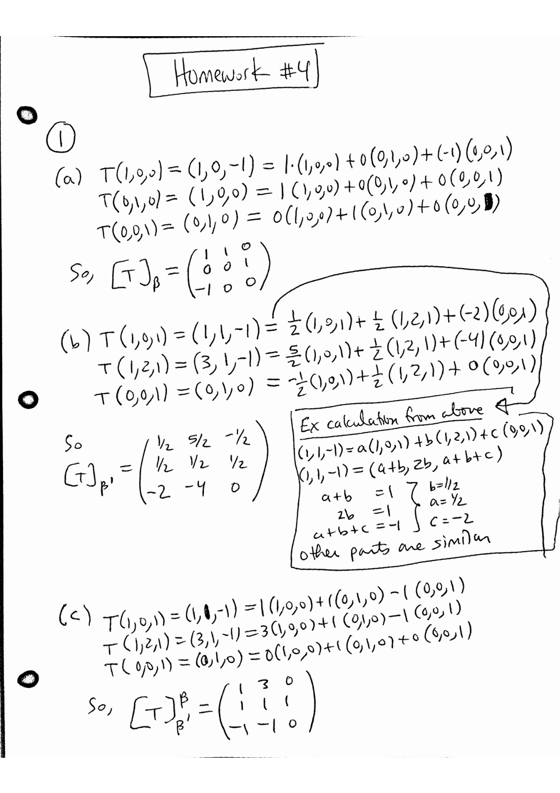
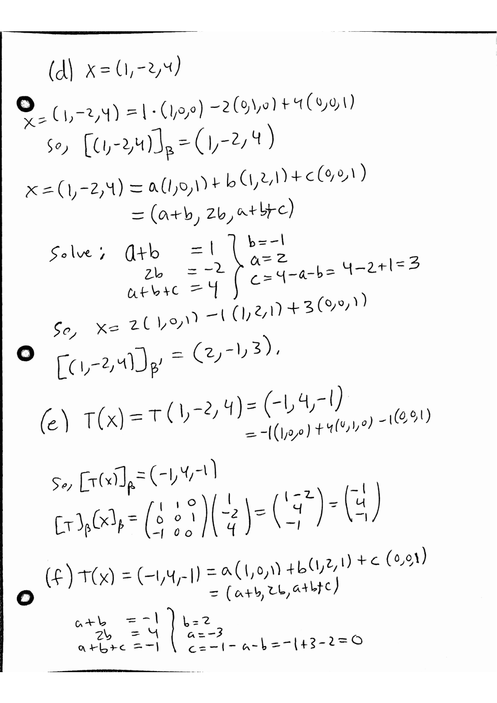
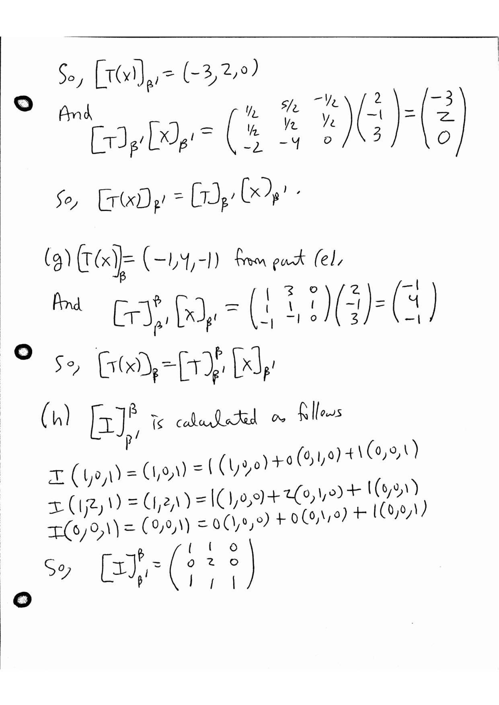
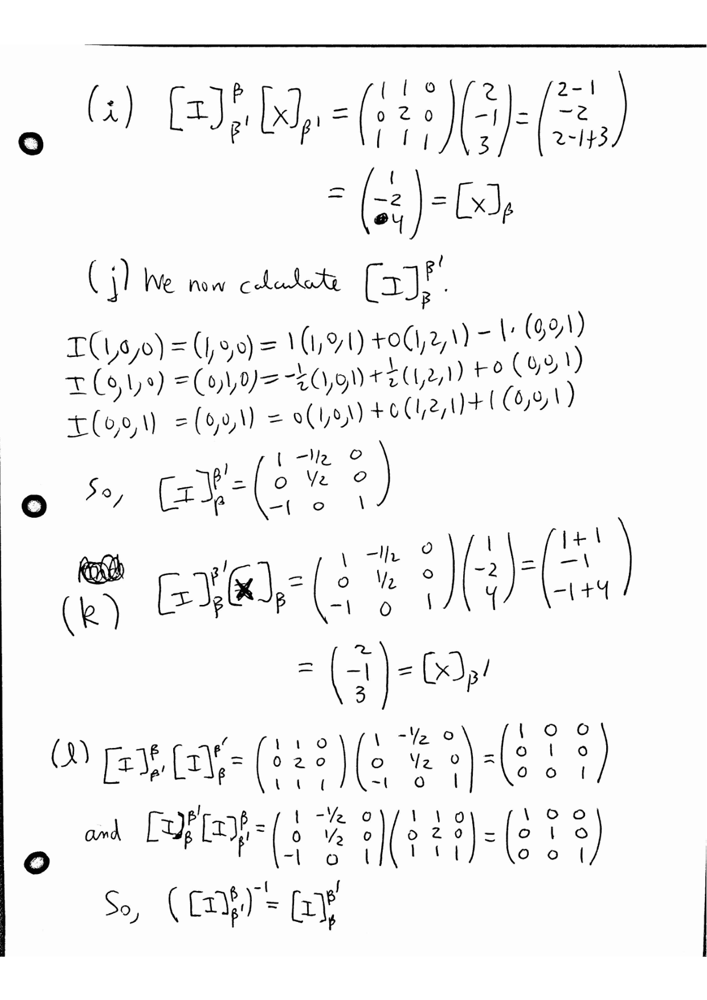

MATH 4570 Topic 4: The Matrix of a Linear Transformation
Krebs' Fall 2026 MATH 4570 homework and extra practice problems, retyped verbatim from his PDFs. Homework solutions are Krebs' official ones (his pages, shown as images); extra-practice solutions are Claude's and labeled so. Tap "Solution" under a problem to jump to it, and "Problem" to jump back.
For: Quiz 4 (Mon Nov 2) · all quiz dates
Problems
Homework for Topic 4
1(a)
1. Consider the vector space $V = \mathbb{R}^3$ over the field $F = \mathbb{R}$. Let $\beta = [(1,0,0),(0,1,0),(0,0,1)]$ and $\beta' = [(1,0,1),(1,2,1),(0,0,1)]$. Let $T : \mathbb{R}^3 \to \mathbb{R}^3$ be defined by $T(a,b,c) = (a+b, c, -a)$.
(a) Calculate $[T]_\beta$
1(f)
(f) Verify that $[T(x)]_{\beta'} = [T]_{\beta'} [x]_{\beta'}$
1(i)
(i) Use $x$ from above and show that $[I]_{\beta'}^{\beta} [x]_{\beta'} = [x]_\beta$
1(k)
(k) Use $x$ from above and show that $[I]_{\beta}^{\beta'} [x]_\beta = [x]_{\beta'}$
1(l)
(l) Show that $\left([I]_{\beta'}^{\beta}\right)^{-1} = [I]_{\beta}^{\beta'}$
1(n)
(n) Show that $[T]_{\beta'} = [I]_{\beta}^{\beta'} [T]_\beta [I]_{\beta'}^{\beta}$
2(a)
2. Let $V$ and $W$ be finite-dimensional vector spaces over a field $F$. Let $\beta$ and $\gamma$ be ordered bases for $V$ and $W$ respectively. Let $T : V \to W$ and $S : V \to W$ be linear transformations. Let $\alpha \in F$.
(a) $[T+S]_\beta^\gamma = [T]_\beta^\gamma + [S]_\beta^\gamma$
3(a)
3. Let $V$, $W$, and $Z$ be finite-dimensional vector spaces over a field $F$ with ordered bases $\alpha$, $\beta$, and $\gamma$, respectively. Let $T : V \to W$ and $U : W \to Z$ be linear transformations.
(a) The composition $U \circ T : V \to Z$ is a linear transformation
3(b)
(b) $[U \circ T]_\alpha^\gamma = [U]_\beta^\gamma [T]_\alpha^\beta$
4
4. Let $V$ and $W$ be finite-dimensional vector spaces over a field $F$ with ordered bases $\alpha$ and $\beta$, respectively. Let $T_1 : V \to W$ and $T_2 : V \to W$ be linear transformations. If $[T_1]_\alpha^\beta = [T_2]_\alpha^\beta$, then $T_1 = T_2$.
5(a)
5. Let $F$ be a field. Let $A \in M_{n,n}(F)$ so that $A$ is a square matrix. Recall that $L_A : F^n \to F^n$ given by left matrix multiplication $L_A(x) = Ax$ is a linear transformation.
(a) Let $\beta = [v_1, v_2, \ldots, v_n]$ be the standard basis for $F^n$. That is, $v_i$ is the vector with zeros in every spot except for a 1 in the $i$-th spot. Then $[L_A]_\beta = A$.
5(c)
(c) Let $\gamma = [w_1, w_2, \ldots, w_n]$ be any ordered basis for $F^n$. Then $[L_A]_\gamma = Q^{-1}AQ$ where $Q$ is the $n \times n$ matrix whose $i$-th column is $w_i$, that is, $Q = (w_1 | w_2 | \cdots | w_n)$.
Extra practice problems for Topic 4
These problems were generated by AI, and although I looked at them quickly to see if they seemed OK, no guarantees. Please let me know if something doesn't make sense, so I can fix it.
Throughout this assignment, all bases are ordered bases. If $$T : V \longrightarrow W,$$ $\beta$ is an ordered basis for $V$, and $\gamma$ is an ordered basis for $W$, then $$[T]_\beta^\gamma$$ denotes the matrix of $T$ with respect to $\beta$ and $\gamma$. Thus, $$[T(v)]_\gamma = [T]_\beta^\gamma [v]_\beta.$$
1(a)
Part One: Computational problems
1. Let $$\beta = \big[(1,1,0),\, (1,0,1),\, (0,1,1)\big]$$ be an ordered basis for $\mathbb{R}^3$. Find each coordinate vector.
(a) $$[(1,1,0)]_\beta$$
2(a)
2. Let $$\beta = \big[1+x,\; x+x^2,\; 1-x+x^2\big]$$ be an ordered basis for $P_2(\mathbb{R})$. Find each coordinate vector.
(a) $$[1]_\beta$$
3(a)
3. Let $$B_1 = \begin{pmatrix} 1 & 0 \\ 0 & 0 \end{pmatrix},\quad B_2 = \begin{pmatrix} 1 & 1 \\ 0 & 0 \end{pmatrix},\quad B_3 = \begin{pmatrix} 0 & 0 \\ 1 & 0 \end{pmatrix},\quad B_4 = \begin{pmatrix} 0 & 0 \\ 1 & 1 \end{pmatrix},$$ and let $$\beta = [B_1, B_2, B_3, B_4].$$
(a) Verify that $\beta$ is an ordered basis for $M_{2,2}(\mathbb{R})$.
3(c)
(c) Find a formula for $$\left[\begin{pmatrix} a & b \\ c & d \end{pmatrix}\right]_\beta.$$
4(a)
4. Define $$T : \mathbb{R}^3 \longrightarrow \mathbb{R}^2$$ by $$T(a,b,c) = (a-2b+c,\; 3a+c).$$ Let $$\beta = \big[(1,1,0),\, (1,0,1),\, (0,1,1)\big]$$ and $$\gamma = \big[(1,1),\, (1,-1)\big].$$
(a) Find $$[T]_\beta^\gamma.$$
5(a)
5. Let $$D : P_3(\mathbb{R}) \longrightarrow P_2(\mathbb{R})$$ be the differentiation transformation $$D(p) = p'.$$ Let $$\beta = [1, x, x^2, x^3]$$ and $$\gamma = [1,\; 1+x,\; 1+x+x^2].$$
(a) Find $$[D]_\beta^\gamma.$$
5(d)
(d) Convert your answer back into a polynomial and check it by differentiating directly.
6(a)
6. Define $$T : P_2(\mathbb{R}) \longrightarrow \mathbb{R}^2$$ by $$T(p) = \big(p(0),\, p(1)\big).$$ Let $$\beta = [1+x,\; x+x^2,\; 1-x+x^2]$$ and $$\gamma = [(1,1),(1,-1)].$$
(a) Find $[T]_\beta^\gamma$.
6(c)
(c) Convert the coordinate vector from part (b) into the ordinary vector $T(2-3x+4x^2)$.
7(a)
7. Define $$S : M_{2,2}(\mathbb{R}) \longrightarrow M_{2,2}(\mathbb{R})$$ by $$S(A) = A + A^{\mathsf{T}}.$$ Let $$\mathcal{E} = [E_{11}, E_{12}, E_{21}, E_{22}]$$ be the standard ordered basis for $M_{2,2}(\mathbb{R})$.
(a) Find $[S]_\mathcal{E}^\mathcal{E}$.
8(a)
8. Suppose $$T : \mathbb{R}^3 \longrightarrow \mathbb{R}^2$$ is linear and $$[T]_\beta^\gamma = \begin{pmatrix} 1 & -2 & 3 \\ 0 & 4 & -1 \end{pmatrix}.$$ Suppose also that $$[v]_\beta = \begin{pmatrix} 2 \\ -1 \\ 3 \end{pmatrix}.$$
(a) Find $[T(v)]_\gamma$.
8(b)
(b) Suppose $$\gamma = [(1,1),(2,-1)].$$ Find $T(v)$ as an ordinary vector in $\mathbb{R}^2$.
9(a)
9. Let $$\beta = [(1,1),(1,-1)]$$ and $$\gamma = [1,\; 1+x,\; x^2].$$ Suppose $$T : \mathbb{R}^2 \longrightarrow P_2(\mathbb{R})$$ is linear and $$[T]_\beta^\gamma = \begin{pmatrix} 1 & 2 \\ -1 & 3 \\ 4 & 0 \end{pmatrix}.$$
(a) Find $T(1,1)$ and $T(1,-1)$.
10(a)
10. Let $$T : \mathbb{R}^2 \longrightarrow \mathbb{R}^2$$ be defined by $$T(a,b) = (2a+b,\; a+2b).$$ Let $$\mathcal{E} = [(1,0),(0,1)]$$ and $$\beta = [(1,1),(1,-1)].$$
(a) Find $[T]_\mathcal{E}^\mathcal{E}$.
10(d)
(d) Find the change-of-coordinate matrices $$[I]_\beta^\mathcal{E} \quad\text{and}\quad [I]_\mathcal{E}^\beta.$$
10(e)
(e) Verify by matrix multiplication that $$[T]_\beta^\beta = [I]_\mathcal{E}^\beta [T]_\mathcal{E}^\mathcal{E} [I]_\beta^\mathcal{E}.$$
11(a)
11. Let $$T : \mathbb{R}^2 \longrightarrow \mathbb{R}^2, \qquad T(a,b) = (a+2b,\; 3a-b),$$ and let $$S : \mathbb{R}^2 \longrightarrow \mathbb{R}^2, \qquad S(a,b) = (2a-b,\; a+b).$$ Use the standard ordered basis $\mathcal{E}$ for $\mathbb{R}^2$.
(a) Find $[T]_\mathcal{E}$ and $[S]_\mathcal{E}$.
12(a)
12. Let $$T : \mathbb{R}^2 \longrightarrow \mathbb{R}^3, \qquad T(a,b) = (a+b,\; 2a-b,\; b),$$ and $$U : \mathbb{R}^3 \longrightarrow \mathbb{R}^2, \qquad U(x,y,z) = (x+z,\; y-z).$$ Let $$\alpha = [(1,0),(1,1)],$$ $$\beta = [(1,0,0),(1,1,0),(0,1,1)],$$ and $$\gamma = [(1,1),(1,-1)].$$
(a) Find $[T]_\alpha^\beta$.
13(a)
13. Let $$\beta = [(1,0,1),(1,2,1),(0,0,1)]$$ and let $$\mathcal{E} = [(1,0,0),(0,1,0),(0,0,1)]$$ be ordered bases for $\mathbb{R}^3$.
(a) Find the change-of-coordinate matrix $$P = [I]_\beta^\mathcal{E}.$$
13(d)
(d) Use $P$ to convert $$[v]_\beta = \begin{pmatrix} 2 \\ -1 \\ 3 \end{pmatrix}$$ into $[v]_\mathcal{E}$.
13(e)
(e) Use $P^{-1}$ to convert $$[w]_\mathcal{E} = \begin{pmatrix} 1 \\ -2 \\ 4 \end{pmatrix}$$ into $[w]_\beta$.
14(a)
14. Let $$T : \mathbb{R}^3 \longrightarrow \mathbb{R}^3$$ be defined by $$T(a,b,c) = (a+b,\; b+c,\; a-c).$$ Let $$\mathcal{E} = [(1,0,0),(0,1,0),(0,0,1)]$$ and $$\beta = [(1,0,1),(1,1,0),(0,1,1)].$$
(a) Find $[T]_\mathcal{E}$.
15(a)
15. Define $$T : \mathbb{R}^2 \longrightarrow \mathbb{R}^2$$ by $$T(a,b) = (2a+b,\; a+b).$$
(a) Find the standard matrix $[T]_\mathcal{E}$.
15(e)
(e) Verify directly that $$T^{-1} \circ T = I_{\mathbb{R}^2} \qquad\text{and}\qquad T \circ T^{-1} = I_{\mathbb{R}^2}.$$
16(a)
16. For $k \in \mathbb{R}$, define $$T_k : \mathbb{R}^2 \longrightarrow \mathbb{R}^2$$ by $$T_k(a,b) = (a+kb,\; ka+b).$$ Let $$\mathcal{E} = [(1,0),(0,1)]$$ and $$\beta = [(1,1),(1,-1)].$$
(a) Find $[T_k]_\mathcal{E}$.
17(a)
17. Let $$\beta = [1, x, x^2]$$ and $$\gamma = [(1,0),(0,1)].$$ For each matrix below, find the unique linear transformation $$T : P_2(\mathbb{R}) \longrightarrow \mathbb{R}^2$$ such that the given matrix is $[T]_\beta^\gamma$.
(a) $$\begin{pmatrix} 1 & 0 & -1 \\ 0 & 2 & 3 \end{pmatrix}$$
For each transformation, also find its rank and nullity and determine whether it is onto.
18(a)
18. Let $$A = \begin{pmatrix} 1 & 2 & 0 \\ -1 & 3 & 4 \\ 2 & 0 & 1 \end{pmatrix}$$ and define $$L_A : \mathbb{R}^3 \longrightarrow \mathbb{R}^3$$ by $$L_A(x) = Ax.$$
(a) Find $[L_A]_\mathcal{E}$, where $\mathcal{E}$ is the standard ordered basis.
19(a)
19. Let $$T : P_2(\mathbb{R}) \longrightarrow P_2(\mathbb{R})$$ be defined by $$T(p) = p + xp'.$$ Let $$\beta = [1, x, x^2]$$ and $$\gamma = [1+x,\; x+x^2,\; 1-x+x^2].$$
(a) Find $[T]_\beta$.
1
Part Two: Proof problems
1. Let $V$ be a finite-dimensional vector space over $F$, and let $$\beta = [v_1, \ldots, v_n]$$ be an ordered basis for $V$. Prove that the coordinate map $$\phi_\beta : V \longrightarrow F^n, \qquad \phi_\beta(v) = [v]_\beta,$$ is a linear transformation.
2
2. Let $V$ and $W$ be finite-dimensional vector spaces over $F$, let $$\beta = [v_1, \ldots, v_n]$$ be an ordered basis for $V$, and let $$\gamma = [w_1, \ldots, w_m]$$ be an ordered basis for $W$. Let $T : V \to W$ be linear. Prove that $$[T(v)]_\gamma = [T]_\beta^\gamma [v]_\beta$$ for every $v \in V$.
3
3. Let $T, S : V \to W$ be linear transformations, and let $\alpha \in F$. Prove that $$[T+S]_\beta^\gamma = [T]_\beta^\gamma + [S]_\beta^\gamma$$ and $$[\alpha T]_\beta^\gamma = \alpha [T]_\beta^\gamma.$$
4
4. Let $T_1, T_2 : V \to W$ be linear transformations. Suppose $$[T_1]_\beta^\gamma = [T_2]_\beta^\gamma.$$ Prove that $$T_1 = T_2.$$
5
5. Let $A \in M_{m,n}(F)$. Prove that there is exactly one linear transformation $$T : V \longrightarrow W$$ such that $$[T]_\beta^\gamma = A.$$
6
6. Let $V$, $W$, and $Z$ be finite-dimensional vector spaces with ordered bases $\alpha$, $\beta$, and $\gamma$, respectively. Let $$T : V \longrightarrow W$$ and $$U : W \longrightarrow Z$$ be linear transformations. Prove that $U \circ T$ is linear and that $$[U \circ T]_\alpha^\gamma = [U]_\beta^\gamma [T]_\alpha^\beta.$$
7
7. Let $I_V : V \to V$ be the identity transformation. Let $\beta$ be an ordered basis for $V$. Prove that $$[I_V]_\beta = I_n,$$ where $n = \dim(V)$.
8
8. Let $\beta$ and $\gamma$ be ordered bases for the same finite-dimensional vector space $V$. Prove that $$[I_V]_\beta^\gamma$$ is invertible and that $$\left([I_V]_\beta^\gamma\right)^{-1} = [I_V]_\gamma^\beta.$$
9
9. Let $T : V \to W$ be a linear transformation between finite-dimensional vector spaces of the same dimension. Prove that $T$ is invertible if and only if $$[T]_\beta^\gamma$$ is an invertible matrix.
10
10. Suppose $T : V \to W$ is invertible. Prove that $$\left[T^{-1}\right]_\gamma^\beta = \left([T]_\beta^\gamma\right)^{-1}.$$
11
11. Let $A \in M_{m,n}(F)$, and define $$L_A : F^n \longrightarrow F^m$$ by $$L_A(x) = Ax.$$ Let $\mathcal{E}_n$ and $\mathcal{E}_m$ be the standard ordered bases for $F^n$ and $F^m$. Prove that $$[L_A]_{\mathcal{E}_n}^{\mathcal{E}_m} = A.$$
12
12. Let $$T : V \longrightarrow W$$ be linear, with ordered bases $\beta$ and $\gamma$. Prove that the coordinate map $$\phi_\beta : (T) \longrightarrow \left([T]_\beta^\gamma\right)$$ defined by $$\phi_\beta(v) = [v]_\beta$$ is an isomorphism.
Deduce that $$\operatorname{nullity}(T) = \operatorname{nullity}\left([T]_\beta^\gamma\right).$$
13
13. Let $$T : V \longrightarrow W$$ be linear, with ordered bases $\beta$ and $\gamma$. Prove that $$\phi_\gamma((T))$$ is the column space of $[T]_\beta^\gamma$.
Deduce that $$\operatorname{rank}(T) = \operatorname{rank}\left([T]_\beta^\gamma\right).$$
14
14. Let $\beta$ and $\gamma$ be ordered bases for a finite-dimensional vector space $V$, and let $T : V \to V$ be linear. Define $$Q = [I_V]_\gamma^\beta.$$ Prove that $$[T]_\gamma = Q^{-1}[T]_\beta Q.$$ Conclude that the matrices of a linear operator with respect to two different ordered bases are similar.
15
15. Let $A$ and $B$ be similar $n \times n$ matrices over $F$. Prove that there exist a vector space $V$, a linear transformation $$T : V \longrightarrow V,$$ and ordered bases $\beta$ and $\gamma$ for $V$ such that $$A = [T]_\beta \qquad\text{and}\qquad B = [T]_\gamma.$$
16
16. Let $A$ and $B$ be similar matrices. Prove that $$\operatorname{rank}(A) = \operatorname{rank}(B)$$ and $$\operatorname{nullity}(A) = \operatorname{nullity}(B).$$
17
17. Let $A$ and $B$ be similar $n \times n$ matrices. Prove that $A$ is invertible if and only if $B$ is invertible.
18
18. Let $\mathcal{L}(V,W)$ denote the vector space of all linear transformations from $V$ to $W$. Define $$\Phi : \mathcal{L}(V,W) \longrightarrow M_{m,n}(F)$$ by $$\Phi(T) = [T]_\beta^\gamma,$$ where $n = \dim(V)$ and $m = \dim(W)$. Prove that $\Phi$ is an isomorphism.
20
20. Let $T : V \to V$ be linear. Suppose there is an ordered basis $$\beta = [v_1, \ldots, v_n]$$ such that $$T(v_i) = \lambda_i v_i$$ for each $i$. Prove that $$[T]_\beta = \begin{pmatrix} \lambda_1 & 0 & \cdots & 0 \\ 0 & \lambda_2 & \cdots & 0 \\ \vdots & \vdots & \ddots & \vdots \\ 0 & 0 & \cdots & \lambda_n \end{pmatrix}.$$
21
21. Let $T : V \to V$ be linear, and let $p(x)$ be a polynomial. Define $$p(T) = a_0I_V + a_1T + \cdots + a_kT^k$$ when $$p(x) = a_0 + a_1x + \cdots + a_kx^k.$$ Prove that $$[p(T)]_\beta = p([T]_\beta).$$
22
22. Let $S, T : V \to V$ be linear transformations satisfying $$S \circ T = T \circ S.$$ Prove that their matrices with respect to any ordered basis $\beta$ commute: $$[S]_\beta[T]_\beta = [T]_\beta[S]_\beta.$$ Is the converse true? Prove your answer.
23
23. Suppose $T : V \to V$ satisfies $$T^2 = T.$$ Prove that, for every ordered basis $\beta$, $$[T]_\beta^2 = [T]_\beta.$$
24
24. Suppose $T : V \to V$ satisfies $$T^2 = I_V.$$ Prove that $[T]_\beta$ is invertible for every ordered basis $\beta$, and find its inverse in terms of $[T]_\beta$.
Solutions
Krebs' official solutions: Homework for Topic 4




Solutions by Claude (not official)
Extra practice problems for Topic 4
1(a) (Claude, not official)
$(1,1,0)$ is the first vector of $\beta$: $(1,1,0) = 1\cdot(1,1,0) + 0\cdot(1,0,1) + 0\cdot(0,1,1)$.
Answer: $[(1,1,0)]_\beta = \begin{pmatrix} 1 \\ 0 \\ 0 \end{pmatrix}$.
1(b) (Claude, not official)
We need $(2,1,1) = x(1,1,0)+y(1,0,1)+z(0,1,1) = (x+y, x+z, y+z)$, i.e. $x+y=2$, $x+z=1$, $y+z=1$. Subtracting the last two: $x - y = 0$, so $x=y=1$ and $z=0$. Check: $(1,1,0)+(1,0,1) = (2,1,1)$.
Answer: $[(2,1,1)]_\beta = \begin{pmatrix} 1 \\ 1 \\ 0 \end{pmatrix}$.
1(c) (Claude, not official)
Solve $x+y=1$, $x+z=-1$, $y+z=3$. Adding: $2(x+y+z) = 3$, so $x+y+z = \frac32$. Then $z = \frac32 - 1 = \frac12$, $y = \frac32 - (-1) = \frac52$, $x = \frac32 - 3 = -\frac32$.
Check: $-\frac32(1,1,0) + \frac52(1,0,1) + \frac12(0,1,1) = \left(-\frac32+\frac52,\; -\frac32+\frac12,\; \frac52+\frac12\right) = (1,-1,3)$.
Answer: $[(1,-1,3)]_\beta = \begin{pmatrix} -3/2 \\ 5/2 \\ 1/2 \end{pmatrix}$.
1(d) (Claude, not official)
In general, write $(a,b,c) = x(1,1,0) + y(1,0,1) + z(0,1,1) = (x+y,\; x+z,\; y+z)$. So we must solve $x+y=a$, $x+z=b$, $y+z=c$. Adding all three gives $x+y+z = \frac{a+b+c}{2}$, hence
$$x = \frac{a+b-c}{2},\qquad y = \frac{a-b+c}{2},\qquad z = \frac{-a+b+c}{2}.$$
(Check: $x+y = a$, $x+z = b$, $y+z = c$; and this formula reproduces parts (a)-(c).)
Answer: $[(a,b,c)]_\beta = \dfrac12\begin{pmatrix} a+b-c \\ a-b+c \\ -a+b+c \end{pmatrix}$.
2(a) (Claude, not official)
Write $a+bx+cx^2 = r(1+x) + s(x+x^2) + t(1-x+x^2) = (r+t) + (r+s-t)x + (s+t)x^2$. Comparing coefficients: $r+t = a$, $r+s-t = b$, $s+t = c$. From the first and third, $r = a-t$ and $s = c-t$; substituting into the second gives $a - t + c - t - t = b$, so $t = \frac{a-b+c}{3}$. Then
$$r = \frac{2a+b-c}{3},\qquad s = \frac{-a+b+2c}{3},\qquad t = \frac{a-b+c}{3}.$$
For $1$: $a=1,b=0,c=0$, so $r = \frac23$, $s=-\frac13$, $t=\frac13$. Check: $\frac23(1+x) - \frac13(x+x^2) + \frac13(1-x+x^2) = 1 + \left(\frac23-\frac13-\frac13\right)x + \left(-\frac13+\frac13\right)x^2 = 1$.
Answer: $[1]_\beta = \begin{pmatrix} 2/3 \\ -1/3 \\ 1/3 \end{pmatrix}$.
2(b) (Claude, not official)
Using the general formula from part (a) with $a=0,b=1,c=0$: $r = \frac13$, $s = \frac13$, $t = -\frac13$. Check: $\frac13(1+x)+\frac13(x+x^2)-\frac13(1-x+x^2) = 0 + \left(\frac13+\frac13+\frac13\right)x + 0\cdot x^2 = x$.
Answer: $[x]_\beta = \begin{pmatrix} 1/3 \\ 1/3 \\ -1/3 \end{pmatrix}$.
2(c) (Claude, not official)
With $a=0,b=0,c=1$: $r = -\frac13$, $s = \frac23$, $t = \frac13$. Check: $-\frac13(1+x) + \frac23(x+x^2) + \frac13(1-x+x^2) = 0 + \left(-\frac13+\frac23-\frac13\right)x + \left(\frac23+\frac13\right)x^2 = x^2$.
Answer: $[x^2]_\beta = \begin{pmatrix} -1/3 \\ 2/3 \\ 1/3 \end{pmatrix}$.
2(d) (Claude, not official)
With $a=2,b=-3,c=4$: $r = \frac{4-3-4}{3} = -1$, $s = \frac{-2-3+8}{3} = 1$, $t = \frac{2+3+4}{3} = 3$. Check: $-(1+x) + (x+x^2) + 3(1-x+x^2) = (-1+3) + (-1+1-3)x + (1+3)x^2 = 2 - 3x + 4x^2$.
Answer: $[2-3x+4x^2]_\beta = \begin{pmatrix} -1 \\ 1 \\ 3 \end{pmatrix}$.
2(e) (Claude, not official)
Write $a+bx+cx^2 = r(1+x) + s(x+x^2) + t(1-x+x^2) = (r+t) + (r+s-t)x + (s+t)x^2$. Comparing coefficients: $r+t = a$, $r+s-t = b$, $s+t = c$. From the first and third, $r = a-t$ and $s = c-t$; substituting into the second gives $a - t + c - t - t = b$, so $t = \frac{a-b+c}{3}$. Then
$$r = \frac{2a+b-c}{3},\qquad s = \frac{-a+b+2c}{3},\qquad t = \frac{a-b+c}{3}.$$
Answer: $[a+bx+cx^2]_\beta = \dfrac13\begin{pmatrix} 2a+b-c \\ -a+b+2c \\ a-b+c \end{pmatrix}$.
3(a) (Claude, not official)
Since $\dim M_{2,2}(\mathbb{R}) = 4$ and $\beta$ has 4 elements, it suffices to show they are linearly independent. Suppose $c_1B_1+c_2B_2+c_3B_3+c_4B_4 = 0$. Then
$$\begin{pmatrix} c_1+c_2 & c_2 \\ c_3+c_4 & c_4 \end{pmatrix} = \begin{pmatrix} 0 & 0 \\ 0 & 0 \end{pmatrix}.$$
The $(1,2)$ entry gives $c_2 = 0$, then the $(1,1)$ entry gives $c_1 = 0$; the $(2,2)$ entry gives $c_4=0$, then the $(2,1)$ entry gives $c_3=0$. So the four matrices are linearly independent, and 4 linearly independent vectors in a 4-dimensional space form a basis. Hence $\beta$ is an ordered basis of $M_{2,2}(\mathbb{R})$.
3(b) (Claude, not official)
We need $c_1B_1+\dots+c_4B_4 = \begin{pmatrix} c_1+c_2 & c_2 \\ c_3+c_4 & c_4 \end{pmatrix} = \begin{pmatrix} 2 & -1 \\ 3 & 4 \end{pmatrix}$. So $c_2 = -1$, $c_1 = 2 - c_2 = 3$, $c_4 = 4$, $c_3 = 3 - c_4 = -1$.
Check: $3B_1 - B_2 - B_3 + 4B_4 = \begin{pmatrix} 3-1 & -1 \\ -1+4 & 4 \end{pmatrix} = \begin{pmatrix} 2 & -1 \\ 3 & 4 \end{pmatrix}$.
Answer: $\begin{pmatrix} 3 \\ -1 \\ -1 \\ 4 \end{pmatrix}$.
3(c) (Claude, not official)
Solve $\begin{pmatrix} c_1+c_2 & c_2 \\ c_3+c_4 & c_4 \end{pmatrix} = \begin{pmatrix} a & b \\ c & d \end{pmatrix}$: $c_2 = b$, $c_1 = a-b$, $c_4 = d$, $c_3 = c-d$. Indeed $(a-b)B_1 + bB_2 + (c-d)B_3 + dB_4 = \begin{pmatrix} a & b \\ c & d \end{pmatrix}$.
Answer: $\left[\begin{pmatrix} a & b \\ c & d \end{pmatrix}\right]_\beta = \begin{pmatrix} a-b \\ b \\ c-d \\ d \end{pmatrix}$. (With $a=2,b=-1,c=3,d=4$ this gives $(3,-1,-1,4)$, matching part (b).)
4(a) (Claude, not official)
First, for any $(p,q) \in \mathbb{R}^2$: $(p,q) = s(1,1) + t(1,-1)$ requires $s+t = p$, $s-t = q$, so $s = \frac{p+q}{2}$, $t = \frac{p-q}{2}$.
Apply $T$ to each vector of $\beta$:
$T(1,1,0) = (1-2+0,\; 3+0) = (-1,3) = 1\cdot(1,1) + (-2)(1,-1)$.
$T(1,0,1) = (1-0+1,\; 3+1) = (2,4) = 3(1,1) + (-1)(1,-1)$.
$T(0,1,1) = (0-2+1,\; 0+1) = (-1,1) = 0\cdot(1,1) + (-1)(1,-1)$.
The columns of $[T]_\beta^\gamma$ are these $\gamma$-coordinate vectors:
Answer: $$[T]_\beta^\gamma = \begin{pmatrix} 1 & 3 & 0 \\ -2 & -1 & -1 \end{pmatrix}.$$
4(b) (Claude, not official)
Using the formula from Problem 1(d) (same basis $\beta$) with $(a,b,c) = (2,-1,3)$: $x = \frac{2-1-3}{2} = -1$, $y = \frac{2+1+3}{2} = 3$, $z = \frac{-2-1+3}{2} = 0$. Check: $-(1,1,0) + 3(1,0,1) = (2,-1,3)$.
Answer: $[(2,-1,3)]_\beta = \begin{pmatrix} -1 \\ 3 \\ 0 \end{pmatrix}$.
4(c) (Claude, not official)
$$[T(2,-1,3)]_\gamma = [T]_\beta^\gamma [(2,-1,3)]_\beta = \begin{pmatrix} 1 & 3 & 0 \\ -2 & -1 & -1 \end{pmatrix}\begin{pmatrix} -1 \\ 3 \\ 0 \end{pmatrix} = \begin{pmatrix} -1+9+0 \\ 2-3+0 \end{pmatrix} = \begin{pmatrix} 8 \\ -1 \end{pmatrix}.$$
Answer: $[T(2,-1,3)]_\gamma = \begin{pmatrix} 8 \\ -1 \end{pmatrix}$.
4(d) (Claude, not official)
Directly: $T(2,-1,3) = (2+2+3,\; 6+3) = (7,9)$.
From part (c): $8(1,1) + (-1)(1,-1) = (8-1,\; 8+1) = (7,9)$. The two agree, confirming $[T(2,-1,3)]_\gamma = (8,-1)$.
5(a) (Claude, not official)
First, $\gamma$-coordinates of the monomials: $1 = 1\cdot 1$; $x = (1+x) - 1$; $x^2 = (1+x+x^2) - (1+x)$. So $[1]_\gamma = (1,0,0)$, $[x]_\gamma = (-1,1,0)$, $[x^2]_\gamma = (0,-1,1)$.
Now differentiate each vector of $\beta$:
$D(1) = 0$, so $[D(1)]_\gamma = (0,0,0)$.
$D(x) = 1$, so $[D(x)]_\gamma = (1,0,0)$.
$D(x^2) = 2x = -2\cdot 1 + 2(1+x)$, so $[D(x^2)]_\gamma = (-2,2,0)$.
$D(x^3) = 3x^2 = 3(1+x+x^2) - 3(1+x)$, so $[D(x^3)]_\gamma = (0,-3,3)$.
Answer: $$[D]_\beta^\gamma = \begin{pmatrix} 0 & 1 & -2 & 0 \\ 0 & 0 & 2 & -3 \\ 0 & 0 & 0 & 3 \end{pmatrix}.$$
5(b) (Claude, not official)
$\beta$ is the standard basis, so the coordinates are just the coefficients: $2 - x + 3x^2 - 4x^3 = 2\cdot 1 + (-1)x + 3x^2 + (-4)x^3$.
Answer: $\begin{pmatrix} 2 \\ -1 \\ 3 \\ -4 \end{pmatrix}$.
5(c) (Claude, not official)
$$\begin{pmatrix} 0 & 1 & -2 & 0 \\ 0 & 0 & 2 & -3 \\ 0 & 0 & 0 & 3 \end{pmatrix}\begin{pmatrix} 2 \\ -1 \\ 3 \\ -4 \end{pmatrix} = \begin{pmatrix} -1-6 \\ 6+12 \\ -12 \end{pmatrix} = \begin{pmatrix} -7 \\ 18 \\ -12 \end{pmatrix}.$$
Answer: $[D(2-x+3x^2-4x^3)]_\gamma = \begin{pmatrix} -7 \\ 18 \\ -12 \end{pmatrix}$.
5(d) (Claude, not official)
$$-7\cdot 1 + 18(1+x) - 12(1+x+x^2) = (-7+18-12) + (18-12)x - 12x^2 = -1 + 6x - 12x^2.$$
Directly: $\frac{d}{dx}(2 - x + 3x^2 - 4x^3) = -1 + 6x - 12x^2$. They agree.
6(a) (Claude, not official)
Recall $(p,q) = \frac{p+q}{2}(1,1) + \frac{p-q}{2}(1,-1)$.
$T(1+x) = (1, 2) = \frac32(1,1) - \frac12(1,-1)$.
$T(x+x^2) = (0, 2) = 1\cdot(1,1) - 1\cdot(1,-1)$.
$T(1-x+x^2) = (1, 1) = 1\cdot(1,1) + 0\cdot(1,-1)$.
Answer: $$[T]_\beta^\gamma = \begin{pmatrix} 3/2 & 1 & 1 \\ -1/2 & -1 & 0 \end{pmatrix}.$$
6(b) (Claude, not official)
From Problem 2(d) (same basis $\beta$), $[2-3x+4x^2]_\beta = (-1,1,3)$. Then
$$[T(2-3x+4x^2)]_\gamma = \begin{pmatrix} 3/2 & 1 & 1 \\ -1/2 & -1 & 0 \end{pmatrix}\begin{pmatrix} -1 \\ 1 \\ 3 \end{pmatrix} = \begin{pmatrix} -\frac32 + 1 + 3 \\ \frac12 - 1 + 0 \end{pmatrix} = \begin{pmatrix} 5/2 \\ -1/2 \end{pmatrix}.$$
6(c) (Claude, not official)
$$\frac52(1,1) - \frac12(1,-1) = \left(\frac52-\frac12,\; \frac52+\frac12\right) = (2,3).$$
Check directly: with $p = 2-3x+4x^2$, $p(0) = 2$ and $p(1) = 2-3+4 = 3$, so $T(p) = (2,3)$. Answer: $T(2-3x+4x^2) = (2,3)$.
6(d) (Claude, not official)
The first two columns $(3/2,-1/2)$ and $(1,-1)$ are not scalar multiples of each other (the $2\times 2$ minor is $\frac32\cdot(-1) - 1\cdot(-\frac12) = -1 \neq 0$), so the column space is all of $\mathbb{R}^2$. A $2\times 3$ matrix has rank at most 2. Answer: yes, $\operatorname{rank}[T]_\beta^\gamma = 2$.
6(e) (Claude, not official)
$\operatorname{rank}(T) = \operatorname{rank}[T]_\beta^\gamma = 2 = \dim \mathbb{R}^2$, so $R(T)$ is a 2-dimensional subspace of $\mathbb{R}^2$, i.e. $R(T) = \mathbb{R}^2$. Answer: $T$ is onto. (By rank-nullity, $\operatorname{nullity}(T) = 3 - 2 = 1$; e.g. $x - x^2$ is in the null space.)
7(a) (Claude, not official)
$S(E_{11}) = E_{11} + E_{11} = 2E_{11}$, coordinates $(2,0,0,0)$.
$S(E_{12}) = E_{12} + E_{21}$, coordinates $(0,1,1,0)$.
$S(E_{21}) = E_{21} + E_{12}$, coordinates $(0,1,1,0)$.
$S(E_{22}) = 2E_{22}$, coordinates $(0,0,0,2)$.
Answer: $$[S]_\mathcal{E}^\mathcal{E} = \begin{pmatrix} 2 & 0 & 0 & 0 \\ 0 & 1 & 1 & 0 \\ 0 & 1 & 1 & 0 \\ 0 & 0 & 0 & 2 \end{pmatrix}.$$
7(b) (Claude, not official)
The $\mathcal{E}$-coordinates of $\begin{pmatrix} 2 & -1 \\ 3 & 4 \end{pmatrix}$ are $(2,-1,3,4)$. Then
$$\begin{pmatrix} 2 & 0 & 0 & 0 \\ 0 & 1 & 1 & 0 \\ 0 & 1 & 1 & 0 \\ 0 & 0 & 0 & 2 \end{pmatrix}\begin{pmatrix} 2 \\ -1 \\ 3 \\ 4 \end{pmatrix} = \begin{pmatrix} 4 \\ 2 \\ 2 \\ 8 \end{pmatrix},$$
so $S\begin{pmatrix} 2 & -1 \\ 3 & 4 \end{pmatrix} = \begin{pmatrix} 4 & 2 \\ 2 & 8 \end{pmatrix}$. Check: $\begin{pmatrix} 2 & -1 \\ 3 & 4 \end{pmatrix} + \begin{pmatrix} 2 & 3 \\ -1 & 4 \end{pmatrix} = \begin{pmatrix} 4 & 2 \\ 2 & 8 \end{pmatrix}$.
7(c) (Claude, not official)
Solve $[S]_\mathcal{E}^\mathcal{E}\,(x_1,x_2,x_3,x_4)^{\mathsf T} = 0$: the equations are $2x_1 = 0$, $x_2 + x_3 = 0$ (twice), $2x_4 = 0$. So $x_1 = x_4 = 0$, $x_3 = -x_2$, $x_2$ free.
Answer: $N\left([S]_\mathcal{E}^\mathcal{E}\right) = \left\{ t\begin{pmatrix} 0 \\ 1 \\ -1 \\ 0 \end{pmatrix} : t \in \mathbb{R} \right\}$, a 1-dimensional subspace of $\mathbb{R}^4$.
7(d) (Claude, not official)
$S(A) = 0$ iff $A^{\mathsf T} = -A$, i.e. $A$ is skew-symmetric. For $A = \begin{pmatrix} a & b \\ c & d \end{pmatrix}$ this means $2a = 0$, $b + c = 0$, $2d = 0$, so
$$N(S) = \left\{ \begin{pmatrix} 0 & t \\ -t & 0 \end{pmatrix} : t \in \mathbb{R} \right\}.$$
The $\mathcal{E}$-coordinate vector of $\begin{pmatrix} 0 & t \\ -t & 0 \end{pmatrix}$ is exactly $(0,t,-t,0)$. So the nullspace of the matrix is precisely the set of coordinate vectors of elements of $N(S)$: the coordinate map $\phi_\mathcal{E}$ carries $N(S)$ isomorphically onto $N([S]_\mathcal{E}^\mathcal{E})$. Both are 1-dimensional.
7(e) (Claude, not official)
$\operatorname{nullity}(S) = \dim N(S) = 1$ (part (d)). By rank-nullity, $\operatorname{rank}(S) = \dim M_{2,2}(\mathbb{R}) - 1 = 4 - 1 = 3$. Consistently, $[S]_\mathcal{E}^\mathcal{E}$ has rank 3: columns 1, 2, 4 are independent and column 3 equals column 2. (The range is the 3-dimensional space of symmetric $2\times 2$ matrices.)
Answer: rank $3$, nullity $1$.
8(a) (Claude, not official)
$$[T(v)]_\gamma = [T]_\beta^\gamma[v]_\beta = \begin{pmatrix} 1 & -2 & 3 \\ 0 & 4 & -1 \end{pmatrix}\begin{pmatrix} 2 \\ -1 \\ 3 \end{pmatrix} = \begin{pmatrix} 2+2+9 \\ 0-4-3 \end{pmatrix} = \begin{pmatrix} 13 \\ -7 \end{pmatrix}.$$
8(b) (Claude, not official)
$$T(v) = 13(1,1) + (-7)(2,-1) = (13-14,\; 13+7) = (-1, 20).$$
Answer: $T(v) = (-1,20)$.
8(c) (Claude, not official)
$T(x) = 0$ iff $[T(x)]_\gamma = 0$ iff $[T]_\beta^\gamma[x]_\beta = 0$. Write $[x]_\beta = (x_1,x_2,x_3)$. The second row gives $4x_2 - x_3 = 0$, so $x_3 = 4x_2$; the first gives $x_1 - 2x_2 + 3x_3 = 0$, so $x_1 = 2x_2 - 12x_2 = -10x_2$. Taking $x_2 = t$:
Answer: $[x]_\beta = t\begin{pmatrix} -10 \\ 1 \\ 4 \end{pmatrix}$, $t \in \mathbb{R}$. (Check: $-10 - 2 + 12 = 0$ and $4 - 4 = 0$.)
8(d) (Claude, not official)
From (c), the null space of $[T]_\beta^\gamma$ is 1-dimensional, and $\operatorname{nullity}(T) = \operatorname{nullity}([T]_\beta^\gamma) = 1$. By rank-nullity, $\operatorname{rank}(T) = 3 - 1 = 2$ (equivalently, the matrix has two non-proportional rows, so rank 2). Answer: rank 2, nullity 1; in particular $T$ is onto $\mathbb{R}^2$.
9(a) (Claude, not official)
Column $j$ of $[T]_\beta^\gamma$ is $[T(\beta_j)]_\gamma$. So
$$T(1,1) = 1\cdot 1 + (-1)(1+x) + 4x^2 = -x + 4x^2,$$
$$T(1,-1) = 2\cdot 1 + 3(1+x) + 0\cdot x^2 = 5 + 3x.$$
9(b) (Claude, not official)
$(a,b) = \frac{a+b}{2}(1,1) + \frac{a-b}{2}(1,-1)$. By linearity,
$$T(a,b) = \frac{a+b}{2}(-x+4x^2) + \frac{a-b}{2}(5+3x) = \frac{5(a-b)}{2} + \frac{-(a+b) + 3(a-b)}{2}\,x + 2(a+b)x^2.$$
Answer: $T(a,b) = \dfrac{5(a-b)}{2} + (a-2b)\,x + 2(a+b)\,x^2$. (Check: $(a,b) = (1,1)$ gives $-x + 4x^2$; $(1,-1)$ gives $5 + 3x$.)
9(c) (Claude, not official)
With $a = 3$, $b = -1$: $\frac{5\cdot 4}{2} + (3+2)x + 2\cdot 2\,x^2$. Answer: $T(3,-1) = 10 + 5x + 4x^2$.
9(d) (Claude, not official)
The two columns $(1,-1,4)$ and $(2,3,0)$ of $[T]_\beta^\gamma$ are not proportional, so the matrix has rank 2 and nullity $2 - 2 = 0$. Since $\operatorname{nullity}(T) = \operatorname{nullity}([T]_\beta^\gamma) = 0$, $N(T) = \{0\}$. Answer: $T$ is one-to-one.
9(e) (Claude, not official)
$\operatorname{rank}(T) = 2 < 3 = \dim P_2(\mathbb{R})$, so $R(T) \neq P_2(\mathbb{R})$. (Indeed, a linear map from a 2-dimensional space can never be onto a 3-dimensional one.) Answer: $T$ is not onto.
10(a) (Claude, not official)
$T(1,0) = (2,1)$ and $T(0,1) = (1,2)$; in the standard basis these are their own coordinates. Answer: $[T]_\mathcal{E}^\mathcal{E} = \begin{pmatrix} 2 & 1 \\ 1 & 2 \end{pmatrix}$.
10(b) (Claude, not official)
$T(1,1) = (3,3) = 3(1,1) + 0(1,-1)$ and $T(1,-1) = (1,-1) = 0(1,1) + 1(1,-1)$. Answer: $[T]_\beta^\beta = \begin{pmatrix} 3 & 0 \\ 0 & 1 \end{pmatrix}$.
10(c) (Claude, not official)
It is diagonal. This happens because each basis vector of $\beta$ is sent to a scalar multiple of itself: $T(1,1) = 3(1,1)$ and $T(1,-1) = 1\cdot(1,-1)$ (they are eigenvectors of $T$ with eigenvalues 3 and 1). In $\beta$-coordinates, $T$ just stretches the first coordinate by 3 and leaves the second alone.
10(d) (Claude, not official)
$[I]_\beta^\mathcal{E}$ has columns $[(1,1)]_\mathcal{E}$, $[(1,-1)]_\mathcal{E}$: $[I]_\beta^\mathcal{E} = \begin{pmatrix} 1 & 1 \\ 1 & -1 \end{pmatrix}$.
$[I]_\mathcal{E}^\beta$ has columns $[(1,0)]_\beta$ and $[(0,1)]_\beta$. Since $(1,0) = \frac12(1,1) + \frac12(1,-1)$ and $(0,1) = \frac12(1,1) - \frac12(1,-1)$, $[I]_\mathcal{E}^\beta = \begin{pmatrix} 1/2 & 1/2 \\ 1/2 & -1/2 \end{pmatrix}$, which is indeed the inverse of $[I]_\beta^\mathcal{E}$.
10(e) (Claude, not official)
$$[T]_\mathcal{E}^\mathcal{E}[I]_\beta^\mathcal{E} = \begin{pmatrix} 2 & 1 \\ 1 & 2 \end{pmatrix}\begin{pmatrix} 1 & 1 \\ 1 & -1 \end{pmatrix} = \begin{pmatrix} 3 & 1 \\ 3 & -1 \end{pmatrix},$$
$$[I]_\mathcal{E}^\beta\begin{pmatrix} 3 & 1 \\ 3 & -1 \end{pmatrix} = \begin{pmatrix} 1/2 & 1/2 \\ 1/2 & -1/2 \end{pmatrix}\begin{pmatrix} 3 & 1 \\ 3 & -1 \end{pmatrix} = \begin{pmatrix} 3 & 0 \\ 0 & 1 \end{pmatrix} = [T]_\beta^\beta.$$
11(a) (Claude, not official)
$T(1,0) = (1,3)$, $T(0,1) = (2,-1)$; $S(1,0) = (2,1)$, $S(0,1) = (-1,1)$. Answer: $$[T]_\mathcal{E} = \begin{pmatrix} 1 & 2 \\ 3 & -1 \end{pmatrix}, \qquad [S]_\mathcal{E} = \begin{pmatrix} 2 & -1 \\ 1 & 1 \end{pmatrix}.$$
11(b) (Claude, not official)
$(T+S)(a,b) = T(a,b) + S(a,b) = (a+2b+2a-b,\; 3a-b+a+b) = (3a+b,\; 4a)$. So $(T+S)(1,0) = (3,4)$, $(T+S)(0,1) = (1,0)$. Answer: $[T+S]_\mathcal{E} = \begin{pmatrix} 3 & 1 \\ 4 & 0 \end{pmatrix}$.
11(c) (Claude, not official)
$$[T]_\mathcal{E} + [S]_\mathcal{E} = \begin{pmatrix} 1+2 & 2-1 \\ 3+1 & -1+1 \end{pmatrix} = \begin{pmatrix} 3 & 1 \\ 4 & 0 \end{pmatrix} = [T+S]_\mathcal{E}.$$
11(d) (Claude, not official)
By linearity of $T \mapsto [T]_\mathcal{E}$: $$[3T-2S]_\mathcal{E} = 3\begin{pmatrix} 1 & 2 \\ 3 & -1 \end{pmatrix} - 2\begin{pmatrix} 2 & -1 \\ 1 & 1 \end{pmatrix} = \begin{pmatrix} -1 & 8 \\ 7 & -5 \end{pmatrix}.$$ Check directly: $(3T-2S)(a,b) = (3a+6b-4a+2b,\; 9a-3b-2a-2b) = (-a+8b,\; 7a-5b)$.
11(e) (Claude, not official)
$$(T\circ S)(a,b) = T(2a-b,\; a+b) = \big((2a-b) + 2(a+b),\; 3(2a-b) - (a+b)\big) = (4a+b,\; 5a-4b).$$
$$(S\circ T)(a,b) = S(a+2b,\; 3a-b) = \big(2(a+2b) - (3a-b),\; (a+2b) + (3a-b)\big) = (-a+5b,\; 4a+b).$$
11(f) (Claude, not official)
From the formulas in (e): $$[T\circ S]_\mathcal{E} = \begin{pmatrix} 4 & 1 \\ 5 & -4 \end{pmatrix}, \qquad [S\circ T]_\mathcal{E} = \begin{pmatrix} -1 & 5 \\ 4 & 1 \end{pmatrix}.$$
11(g) (Claude, not official)
$$[T]_\mathcal{E}[S]_\mathcal{E} = \begin{pmatrix} 1 & 2 \\ 3 & -1 \end{pmatrix}\begin{pmatrix} 2 & -1 \\ 1 & 1 \end{pmatrix} = \begin{pmatrix} 2+2 & -1+2 \\ 6-1 & -3-1 \end{pmatrix} = \begin{pmatrix} 4 & 1 \\ 5 & -4 \end{pmatrix} = [T\circ S]_\mathcal{E}.$$
11(h) (Claude, not official)
No. $[T\circ S]_\mathcal{E} = \begin{pmatrix} 4 & 1 \\ 5 & -4 \end{pmatrix} \neq \begin{pmatrix} -1 & 5 \\ 4 & 1 \end{pmatrix} = [S\circ T]_\mathcal{E}$, and linear maps with different matrices (in the same basis) are different. Concretely, $(T\circ S)(1,0) = (4,5)$ but $(S\circ T)(1,0) = (-1,4)$.
12(a) (Claude, not official)
$\beta$-coordinates: $(p,q,r) = s_1(1,0,0) + s_2(1,1,0) + s_3(0,1,1) = (s_1+s_2,\; s_2+s_3,\; s_3)$, so $s_3 = r$, $s_2 = q - r$, $s_1 = p - q + r$.
$T(1,0) = (1,2,0)$: $s_3 = 0$, $s_2 = 2$, $s_1 = -1$. Check: $-(1,0,0) + 2(1,1,0) = (1,2,0)$.
$T(1,1) = (2,1,1)$: $s_3 = 1$, $s_2 = 0$, $s_1 = 2$. Check: $2(1,0,0) + (0,1,1) = (2,1,1)$.
Answer: $$[T]_\alpha^\beta = \begin{pmatrix} -1 & 2 \\ 2 & 0 \\ 0 & 1 \end{pmatrix}.$$
12(b) (Claude, not official)
Recall $(p,q) = \frac{p+q}{2}(1,1) + \frac{p-q}{2}(1,-1)$.
$U(1,0,0) = (1,0) = \frac12(1,1) + \frac12(1,-1)$.
$U(1,1,0) = (1,1) = 1(1,1) + 0(1,-1)$.
$U(0,1,1) = (1,0) = \frac12(1,1) + \frac12(1,-1)$.
Answer: $$[U]_\beta^\gamma = \begin{pmatrix} 1/2 & 1 & 1/2 \\ 1/2 & 0 & 1/2 \end{pmatrix}.$$
12(c) (Claude, not official)
$$[U\circ T]_\alpha^\gamma = [U]_\beta^\gamma[T]_\alpha^\beta = \begin{pmatrix} 1/2 & 1 & 1/2 \\ 1/2 & 0 & 1/2 \end{pmatrix}\begin{pmatrix} -1 & 2 \\ 2 & 0 \\ 0 & 1 \end{pmatrix} = \begin{pmatrix} -\frac12 + 2 + 0 & 1 + 0 + \frac12 \\ -\frac12 + 0 + 0 & 1 + 0 + \frac12 \end{pmatrix} = \begin{pmatrix} 3/2 & 3/2 \\ -1/2 & 3/2 \end{pmatrix}.$$
12(d) (Claude, not official)
$$(U\circ T)(a,b) = U(a+b,\; 2a-b,\; b) = \big((a+b) + b,\; (2a-b) - b\big) = (a+2b,\; 2a-2b).$$
12(e) (Claude, not official)
$(U\circ T)(1,0) = (1,2) = \frac32(1,1) - \frac12(1,-1)$, and $(U\circ T)(1,1) = (3,0) = \frac32(1,1) + \frac32(1,-1)$. So
$$[U\circ T]_\alpha^\gamma = \begin{pmatrix} 3/2 & 3/2 \\ -1/2 & 3/2 \end{pmatrix},$$
which agrees with part (c), as guaranteed by $[U\circ T]_\alpha^\gamma = [U]_\beta^\gamma[T]_\alpha^\beta$.
13(a) (Claude, not official)
Column $j$ of $[I]_\beta^\mathcal{E}$ is the standard-coordinate vector of the $j$-th vector of $\beta$, i.e. the vector itself. Answer: $$P = \begin{pmatrix} 1 & 1 & 0 \\ 0 & 2 & 0 \\ 1 & 1 & 1 \end{pmatrix}.$$
13(b) (Claude, not official)
Row reduce $(P \mid I)$:
$$\left(\begin{array}{ccc|ccc} 1 & 1 & 0 & 1 & 0 & 0 \\ 0 & 2 & 0 & 0 & 1 & 0 \\ 1 & 1 & 1 & 0 & 0 & 1 \end{array}\right) \xrightarrow{R_3 - R_1} \left(\begin{array}{ccc|ccc} 1 & 1 & 0 & 1 & 0 & 0 \\ 0 & 2 & 0 & 0 & 1 & 0 \\ 0 & 0 & 1 & -1 & 0 & 1 \end{array}\right) \xrightarrow{\frac12 R_2,\ R_1 - R_2} \left(\begin{array}{ccc|ccc} 1 & 0 & 0 & 1 & -\frac12 & 0 \\ 0 & 1 & 0 & 0 & \frac12 & 0 \\ 0 & 0 & 1 & -1 & 0 & 1 \end{array}\right).$$
Answer: $$P^{-1} = \begin{pmatrix} 1 & -1/2 & 0 \\ 0 & 1/2 & 0 \\ -1 & 0 & 1 \end{pmatrix}.$$ (Check: $PP^{-1} = I_3$.)
13(c) (Claude, not official)
Compute $[I]_\mathcal{E}^\beta$ directly: its columns are the $\beta$-coordinates of $e_1, e_2, e_3$.
$(1,0,0) = 1(1,0,1) + 0(1,2,1) - 1(0,0,1)$, so $[e_1]_\beta = (1,0,-1)$.
$(0,1,0) = -\frac12(1,0,1) + \frac12(1,2,1) + 0(0,0,1)$, so $[e_2]_\beta = (-\frac12,\frac12,0)$.
$(0,0,1) = 0(1,0,1)+0(1,2,1)+1(0,0,1)$, so $[e_3]_\beta = (0,0,1)$.
Hence $[I]_\mathcal{E}^\beta = \begin{pmatrix} 1 & -1/2 & 0 \\ 0 & 1/2 & 0 \\ -1 & 0 & 1 \end{pmatrix} = P^{-1}$.
13(d) (Claude, not official)
$$[v]_\mathcal{E} = P[v]_\beta = \begin{pmatrix} 1 & 1 & 0 \\ 0 & 2 & 0 \\ 1 & 1 & 1 \end{pmatrix}\begin{pmatrix} 2 \\ -1 \\ 3 \end{pmatrix} = \begin{pmatrix} 1 \\ -2 \\ 4 \end{pmatrix}.$$ Check: $2(1,0,1) - (1,2,1) + 3(0,0,1) = (1,-2,4)$.
13(e) (Claude, not official)
$$[w]_\beta = P^{-1}[w]_\mathcal{E} = \begin{pmatrix} 1 & -1/2 & 0 \\ 0 & 1/2 & 0 \\ -1 & 0 & 1 \end{pmatrix}\begin{pmatrix} 1 \\ -2 \\ 4 \end{pmatrix} = \begin{pmatrix} 1+1 \\ -1 \\ -1+4 \end{pmatrix} = \begin{pmatrix} 2 \\ -1 \\ 3 \end{pmatrix}.$$ (Consistent with (d): $w$ is the same vector as $v$.)
14(a) (Claude, not official)
$T(1,0,0) = (1,0,1)$, $T(0,1,0) = (1,1,0)$, $T(0,0,1) = (0,1,-1)$. Answer: $$[T]_\mathcal{E} = \begin{pmatrix} 1 & 1 & 0 \\ 0 & 1 & 1 \\ 1 & 0 & -1 \end{pmatrix}.$$
14(b) (Claude, not official)
The columns are the vectors of $\beta$. Answer: $$Q = \begin{pmatrix} 1 & 1 & 0 \\ 0 & 1 & 1 \\ 1 & 0 & 1 \end{pmatrix}.$$
14(c) (Claude, not official)
$\det Q = 1(1-0) - 1(0-1) + 0 = 2 \neq 0$. Row reducing $(Q \mid I_3)$ (or using the adjugate) gives
$$Q^{-1} = \frac12\begin{pmatrix} 1 & -1 & 1 \\ 1 & 1 & -1 \\ -1 & 1 & 1 \end{pmatrix}.$$
Check, first column of $QQ^{-1}$: $\frac12(1+1+0,\; 0+1-1,\; 1+0-1) = (1,0,0)$; the other columns check similarly, so $QQ^{-1} = I_3$.
14(d) (Claude, not official)
$[T]_\beta = Q^{-1}[T]_\mathcal{E}Q$. First
$$[T]_\mathcal{E}Q = \begin{pmatrix} 1 & 1 & 0 \\ 0 & 1 & 1 \\ 1 & 0 & -1 \end{pmatrix}\begin{pmatrix} 1 & 1 & 0 \\ 0 & 1 & 1 \\ 1 & 0 & 1 \end{pmatrix} = \begin{pmatrix} 1 & 2 & 1 \\ 1 & 1 & 2 \\ 0 & 1 & -1 \end{pmatrix},$$
$$Q^{-1}\begin{pmatrix} 1 & 2 & 1 \\ 1 & 1 & 2 \\ 0 & 1 & -1 \end{pmatrix} = \frac12\begin{pmatrix} 1 & -1 & 1 \\ 1 & 1 & -1 \\ -1 & 1 & 1 \end{pmatrix}\begin{pmatrix} 1 & 2 & 1 \\ 1 & 1 & 2 \\ 0 & 1 & -1 \end{pmatrix} = \frac12\begin{pmatrix} 0 & 2 & -2 \\ 2 & 2 & 4 \\ 0 & 0 & 0 \end{pmatrix}.$$
Answer: $$[T]_\beta = \begin{pmatrix} 0 & 1 & -1 \\ 1 & 1 & 2 \\ 0 & 0 & 0 \end{pmatrix}.$$
14(e) (Claude, not official)
Let $\beta = [u_1,u_2,u_3] = [(1,0,1),(1,1,0),(0,1,1)]$.
$T(u_1) = T(1,0,1) = (1,1,0) = u_2$, so $[T(u_1)]_\beta = (0,1,0)$.
$T(u_2) = T(1,1,0) = (2,1,1) = u_1 + u_2$, so $[T(u_2)]_\beta = (1,1,0)$.
$T(u_3) = T(0,1,1) = (1,2,-1) = -u_1 + 2u_2$ (check: $(-1,0,-1)+(2,2,0) = (1,2,-1)$), so $[T(u_3)]_\beta = (-1,2,0)$.
So $[T]_\beta = \begin{pmatrix} 0 & 1 & -1 \\ 1 & 1 & 2 \\ 0 & 0 & 0 \end{pmatrix}$, matching part (d).
14(f) (Claude, not official)
Two $n\times n$ matrices $A, B$ are similar if $B = Q^{-1}AQ$ for some invertible $Q$. Here $Q = [I]_\beta^\mathcal{E}$ is invertible ($\det Q = 2$) and parts (d)/(e) show $[T]_\beta = Q^{-1}[T]_\mathcal{E}Q$. So they are similar.
Sanity checks of similarity invariants: $\operatorname{tr}[T]_\mathcal{E} = 1+1-1 = 1 = 0+1+0 = \operatorname{tr}[T]_\beta$; $\det[T]_\mathcal{E} = 1(-1-0) - 1(0-1) + 0 = 0 = \det[T]_\beta$ (it has a zero row); both have rank 2.
15(a) (Claude, not official)
$T(1,0) = (2,1)$, $T(0,1) = (1,1)$. Answer: $[T]_\mathcal{E} = \begin{pmatrix} 2 & 1 \\ 1 & 1 \end{pmatrix}$.
15(b) (Claude, not official)
$\det[T]_\mathcal{E} = 2\cdot 1 - 1\cdot 1 = 1 \neq 0$, so $[T]_\mathcal{E}$ is invertible, and therefore $T$ is invertible ($T$ is invertible iff its matrix is). Answer: yes.
15(c) (Claude, not official)
For $\begin{pmatrix} p & q \\ r & s \end{pmatrix}$ the inverse is $\frac{1}{ps-qr}\begin{pmatrix} s & -q \\ -r & p \end{pmatrix}$. With determinant 1: $$[T^{-1}]_\mathcal{E} = ([T]_\mathcal{E})^{-1} = \begin{pmatrix} 1 & -1 \\ -1 & 2 \end{pmatrix}.$$
15(d) (Claude, not official)
$$T^{-1}(a,b) = \begin{pmatrix} 1 & -1 \\ -1 & 2 \end{pmatrix}\begin{pmatrix} a \\ b \end{pmatrix} \;\Longrightarrow\; T^{-1}(a,b) = (a-b,\; -a+2b).$$
15(e) (Claude, not official)
$(T^{-1}\circ T)(a,b) = T^{-1}(2a+b,\; a+b) = \big((2a+b)-(a+b),\; -(2a+b)+2(a+b)\big) = (a,b)$.
$(T\circ T^{-1})(a,b) = T(a-b,\; -a+2b) = \big(2(a-b)+(-a+2b),\; (a-b)+(-a+2b)\big) = (a,b)$.
Both compositions are the identity on $\mathbb{R}^2$.
16(a) (Claude, not official)
$T_k(1,0) = (1,k)$ and $T_k(0,1) = (k,1)$. Answer: $[T_k]_\mathcal{E} = \begin{pmatrix} 1 & k \\ k & 1 \end{pmatrix}$.
16(b) (Claude, not official)
$T_k(1,1) = (1+k,\; k+1) = (1+k)(1,1)$ and $T_k(1,-1) = (1-k,\; k-1) = (1-k)(1,-1)$. Answer: $$[T_k]_\beta = \begin{pmatrix} 1+k & 0 \\ 0 & 1-k \end{pmatrix}.$$
16(c) (Claude, not official)
$T_k$ is invertible iff $[T_k]_\beta$ is invertible iff $\det[T_k]_\beta = (1+k)(1-k) = 1 - k^2 \neq 0$ (the same as $\det[T_k]_\mathcal{E} = 1 - k^2$). Answer: $T_k$ is invertible exactly when $k \neq 1$ and $k \neq -1$.
16(d) (Claude, not official)
$[T_k^{-1}]_\beta = ([T_k]_\beta)^{-1}$, and the inverse of a diagonal matrix with nonzero diagonal entries is obtained by inverting the entries: $$[T_k^{-1}]_\beta = \begin{pmatrix} \frac{1}{1+k} & 0 \\ 0 & \frac{1}{1-k} \end{pmatrix}, \qquad k \neq \pm 1.$$
16(e) (Claude, not official)
$k = 1$: $[T_1]_\beta = \begin{pmatrix} 2 & 0 \\ 0 & 0 \end{pmatrix}$ has rank 1. Indeed $T_1(a,b) = (a+b,\; a+b)$, with $N(T_1) = \operatorname{span}\{(1,-1)\}$ and $R(T_1) = \operatorname{span}\{(1,1)\}$. Rank 1, nullity 1.
$k = -1$: $[T_{-1}]_\beta = \begin{pmatrix} 0 & 0 \\ 0 & 2 \end{pmatrix}$ has rank 1. Indeed $T_{-1}(a,b) = (a-b,\; b-a)$, with $N(T_{-1}) = \operatorname{span}\{(1,1)\}$ and $R(T_{-1}) = \operatorname{span}\{(1,-1)\}$. Rank 1, nullity 1.
Answer: for both $k = 1$ and $k = -1$: rank 1, nullity 1.
17(a) (Claude, not official)
Since $\gamma$ is the standard basis of $\mathbb{R}^2$, $T(a+bx+cx^2) = [T]_\beta^\gamma\,(a,b,c)^{\mathsf T}$ read as an ordinary vector. Rank-nullity: $\operatorname{rank} + \operatorname{nullity} = \dim P_2(\mathbb{R}) = 3$, and $T$ is onto iff its rank is $2 = \dim\mathbb{R}^2$.
$$T(a+bx+cx^2) = (a - c,\; 2b + 3c).$$
The two rows are independent, so rank 2, nullity $3 - 2 = 1$. The null space: $a = c$, $b = -\frac32 c$; with $c = 2$ it is spanned by $2 - 3x + 2x^2$. Since rank $= 2 = \dim\mathbb{R}^2$, $T$ is onto.
17(b) (Claude, not official)
Since $\gamma$ is the standard basis of $\mathbb{R}^2$, $T(a+bx+cx^2) = [T]_\beta^\gamma\,(a,b,c)^{\mathsf T}$ read as an ordinary vector. Rank-nullity: $\operatorname{rank} + \operatorname{nullity} = \dim P_2(\mathbb{R}) = 3$, and $T$ is onto iff its rank is $2 = \dim\mathbb{R}^2$.
$$T(a+bx+cx^2) = (a+b+c,\; a-b).$$
The rows are not proportional, so rank 2 and nullity 1. Null space: $a = b$ and $c = -2a$, spanned by $1 + x - 2x^2$. Rank 2 means $T$ is onto.
17(c) (Claude, not official)
Since $\gamma$ is the standard basis of $\mathbb{R}^2$, $T(a+bx+cx^2) = [T]_\beta^\gamma\,(a,b,c)^{\mathsf T}$ read as an ordinary vector. Rank-nullity: $\operatorname{rank} + \operatorname{nullity} = \dim P_2(\mathbb{R}) = 3$, and $T$ is onto iff its rank is $2 = \dim\mathbb{R}^2$.
$$T(a+bx+cx^2) = (b+2c,\; 0).$$
Only one nonzero row, so rank 1 and nullity $3 - 1 = 2$. Null space: $b = -2c$, spanned by $1$ and $-2x + x^2$. The range is $\operatorname{span}\{(1,0)\} \neq \mathbb{R}^2$ (e.g. $(0,1)$ is not hit), so $T$ is not onto.
18(a) (Claude, not official)
$L_A(e_j) = Ae_j$ is the $j$-th column of $A$, which is its own standard-coordinate vector. Answer: $[L_A]_\mathcal{E} = A = \begin{pmatrix} 1 & 2 & 0 \\ -1 & 3 & 4 \\ 2 & 0 & 1 \end{pmatrix}$.
18(b) (Claude, not official)
Apply $A$ to each basis vector:
$A(1,1,0)^{\mathsf T} = (3,2,2)$, $A(1,0,1)^{\mathsf T} = (1,3,3)$, $A(0,1,1)^{\mathsf T} = (2,7,1)$.
Convert to $\beta$-coordinates with the formula from Problem 1(d), $[(a,b,c)]_\beta = \frac12(a+b-c,\; a-b+c,\; -a+b+c)$:
$[(3,2,2)]_\beta = \frac12(3,3,1)$, $[(1,3,3)]_\beta = \frac12(1,1,5)$, $[(2,7,1)]_\beta = \frac12(8,-4,6) = (4,-2,3)$.
Answer: $$[L_A]_\beta = \begin{pmatrix} 3/2 & 1/2 & 4 \\ 3/2 & 1/2 & -2 \\ 1/2 & 5/2 & 3 \end{pmatrix}.$$ (Check of column 1: $\frac32(1,1,0) + \frac32(1,0,1) + \frac12(0,1,1) = (3,2,2)$.)
18(c) (Claude, not official)
Take $Q = [I]_\beta^\mathcal{E}$, the matrix whose columns are the vectors of $\beta$: $$Q = \begin{pmatrix} 1 & 1 & 0 \\ 1 & 0 & 1 \\ 0 & 1 & 1 \end{pmatrix}, \qquad Q^{-1} = \frac12\begin{pmatrix} 1 & 1 & -1 \\ 1 & -1 & 1 \\ -1 & 1 & 1 \end{pmatrix}.$$
Then $[L_A]_\beta = [I]_\mathcal{E}^\beta[L_A]_\mathcal{E}[I]_\beta^\mathcal{E} = Q^{-1}AQ$. Verification: $AQ = \begin{pmatrix} 3 & 1 & 2 \\ 2 & 3 & 7 \\ 2 & 3 & 1 \end{pmatrix}$ (the vectors computed in (b)), and $Q^{-1}(AQ) = \frac12\begin{pmatrix} 3 & 1 & 8 \\ 3 & 1 & -4 \\ 1 & 5 & 6 \end{pmatrix}$, which is $[L_A]_\beta$ from (b).
18(d) (Claude, not official)
Expanding along the first row: $\det A = 1(3\cdot 1 - 4\cdot 0) - 2((-1)\cdot 1 - 4\cdot 2) + 0 = 3 + 18 = 21 \neq 0$. So $A = [L_A]_\mathcal{E}$ is invertible, hence $L_A$ is invertible.
18(e) (Claude, not official)
$[L_A^{-1}]_\mathcal{E} = ([L_A]_\mathcal{E})^{-1} = A^{-1}$. Via the adjugate ($A^{-1} = \frac{1}{\det A}\operatorname{adj}A$), the cofactors give
$$A^{-1} = \frac{1}{21}\begin{pmatrix} 3 & -2 & 8 \\ 9 & 1 & -4 \\ -6 & 4 & 5 \end{pmatrix}.$$
Check, first row of $A$ times the columns of $21A^{-1}$: $(3+18+0,\; -2+2+0,\; 8-8+0) = (21,0,0)$; the other rows check likewise, so $AA^{-1} = I_3$. Thus $L_A^{-1} = L_{A^{-1}}$.
19(a) (Claude, not official)
$T(x^k) = x^k + x\cdot kx^{k-1} = (k+1)x^k$. So $T(1) = 1$, $T(x) = 2x$, $T(x^2) = 3x^2$. Answer: $$[T]_\beta = \begin{pmatrix} 1 & 0 & 0 \\ 0 & 2 & 0 \\ 0 & 0 & 3 \end{pmatrix}.$$
19(b) (Claude, not official)
$T(1+x) = 1 + 2x$, $T(x+x^2) = 2x + 3x^2$, $T(1-x+x^2) = 1 - 2x + 3x^2$. Using the formula from Problem 2(e) (same basis), $[a+bx+cx^2]_\gamma = \frac13(2a+b-c,\; -a+b+2c,\; a-b+c)$:
$[1+2x]_\gamma = \frac13(4, 1, -1)$; $[2x+3x^2]_\gamma = \frac13(-1, 8, 1)$; $[1-2x+3x^2]_\gamma = \frac13(-3, 3, 6) = (-1, 1, 2)$.
Answer: $$[T]_\gamma = \begin{pmatrix} 4/3 & -1/3 & -1 \\ 1/3 & 8/3 & 1 \\ -1/3 & 1/3 & 2 \end{pmatrix}.$$ (Check of column 1: $\frac43(1+x) + \frac13(x+x^2) - \frac13(1-x+x^2) = 1 + 2x$.)
19(c) (Claude, not official)
Columns are the $\beta$-coordinates (coefficients) of the vectors of $\gamma$. Answer: $$Q = \begin{pmatrix} 1 & 0 & 1 \\ 1 & 1 & -1 \\ 0 & 1 & 1 \end{pmatrix}.$$
19(d) (Claude, not official)
$Q^{-1} = [I]_\beta^\gamma$ has columns $[1]_\gamma, [x]_\gamma, [x^2]_\gamma$, which were found in Problem 2(a)-(c): $$Q^{-1} = \frac13\begin{pmatrix} 2 & 1 & -1 \\ -1 & 1 & 2 \\ 1 & -1 & 1 \end{pmatrix}.$$
$$[T]_\beta Q = \begin{pmatrix} 1 & 0 & 0 \\ 0 & 2 & 0 \\ 0 & 0 & 3 \end{pmatrix}\begin{pmatrix} 1 & 0 & 1 \\ 1 & 1 & -1 \\ 0 & 1 & 1 \end{pmatrix} = \begin{pmatrix} 1 & 0 & 1 \\ 2 & 2 & -2 \\ 0 & 3 & 3 \end{pmatrix},$$
$$Q^{-1}([T]_\beta Q) = \frac13\begin{pmatrix} 2 & 1 & -1 \\ -1 & 1 & 2 \\ 1 & -1 & 1 \end{pmatrix}\begin{pmatrix} 1 & 0 & 1 \\ 2 & 2 & -2 \\ 0 & 3 & 3 \end{pmatrix} = \frac13\begin{pmatrix} 4 & -1 & -3 \\ 1 & 8 & 3 \\ -1 & 1 & 6 \end{pmatrix} = [T]_\gamma. \checkmark$$
19(e) (Claude, not official)
$\det[T]_\beta = 1\cdot 2\cdot 3 = 6 \neq 0$, so $[T]_\beta$ is invertible and hence $T$ is invertible.
19(f) (Claude, not official)
$[T^{-1}]_\beta = ([T]_\beta)^{-1} = \begin{pmatrix} 1 & 0 & 0 \\ 0 & 1/2 & 0 \\ 0 & 0 & 1/3 \end{pmatrix}$. Therefore
$$T^{-1}(a + bx + cx^2) = a + \frac{b}{2}x + \frac{c}{3}x^2.$$
Check: $T\left(a + \frac b2 x + \frac c3 x^2\right) = a + 2\cdot\frac b2 x + 3\cdot\frac c3 x^2 = a + bx + cx^2$.
1 (Claude, not official)
Recall $[v]_\beta = (a_1,\ldots,a_n)$ where $v = a_1v_1 + \cdots + a_nv_n$; these scalars exist because $\beta$ spans $V$ and are unique because $\beta$ is linearly independent, so $\phi_\beta$ is well defined.
Let $u, v \in V$ and $c \in F$, with $u = \sum_i a_iv_i$ and $v = \sum_i b_iv_i$. Then
$$cu + v = \sum_{i=1}^n (ca_i + b_i)v_i.$$
By uniqueness of coordinates, $[cu+v]_\beta = (ca_1+b_1, \ldots, ca_n+b_n) = c(a_1,\ldots,a_n) + (b_1,\ldots,b_n) = c[u]_\beta + [v]_\beta$. Hence $\phi_\beta(cu+v) = c\,\phi_\beta(u) + \phi_\beta(v)$, so $\phi_\beta$ is linear. $\blacksquare$
(In fact $\phi_\beta$ is an isomorphism: it is one-to-one since $[v]_\beta = 0$ forces $v = 0$, and onto since $(c_1,\ldots,c_n) = [\sum c_iv_i]_\beta$.)
2 (Claude, not official)
Let $A = [T]_\beta^\gamma = (A_{ij})$. By definition, its $j$-th column is $[T(v_j)]_\gamma$, i.e.
$$T(v_j) = \sum_{i=1}^m A_{ij}w_i \qquad (j = 1,\ldots,n).$$
Let $v \in V$ and write $v = \sum_{j=1}^n a_jv_j$, so $[v]_\beta = (a_1,\ldots,a_n)$. By linearity of $T$,
$$T(v) = \sum_{j=1}^n a_jT(v_j) = \sum_{j=1}^n a_j\sum_{i=1}^m A_{ij}w_i = \sum_{i=1}^m\left(\sum_{j=1}^n A_{ij}a_j\right)w_i.$$
By uniqueness of coordinates, the $i$-th entry of $[T(v)]_\gamma$ is $\sum_{j} A_{ij}a_j$, which is exactly the $i$-th entry of the product $A[v]_\beta$. Hence $[T(v)]_\gamma = [T]_\beta^\gamma[v]_\beta$. $\blacksquare$
3 (Claude, not official)
(Implicitly $V, W$ are finite-dimensional with ordered bases $\beta = [v_1,\ldots,v_n]$ and $\gamma$, as in the preamble.)
The $j$-th column of $[T+S]_\beta^\gamma$ is $[(T+S)(v_j)]_\gamma = [T(v_j) + S(v_j)]_\gamma$. Since the coordinate map $\phi_\gamma$ is linear (Problem 1), this equals $[T(v_j)]_\gamma + [S(v_j)]_\gamma$, which is the $j$-th column of $[T]_\beta^\gamma$ plus the $j$-th column of $[S]_\beta^\gamma$, i.e. the $j$-th column of $[T]_\beta^\gamma + [S]_\beta^\gamma$. As this holds for every $j$, $[T+S]_\beta^\gamma = [T]_\beta^\gamma + [S]_\beta^\gamma$.
Similarly, the $j$-th column of $[\alpha T]_\beta^\gamma$ is $[(\alpha T)(v_j)]_\gamma = [\alpha\,T(v_j)]_\gamma = \alpha[T(v_j)]_\gamma$ (linearity of $\phi_\gamma$), which is $\alpha$ times the $j$-th column of $[T]_\beta^\gamma$. Hence $[\alpha T]_\beta^\gamma = \alpha[T]_\beta^\gamma$. $\blacksquare$
4 (Claude, not official)
Let $\beta = [v_1,\ldots,v_n]$. Equal matrices have equal $j$-th columns, so $[T_1(v_j)]_\gamma = [T_2(v_j)]_\gamma$ for each $j$. A vector is determined by its coordinate vector ($w = \sum_i c_iw_i$ where $(c_i) = [w]_\gamma$), so $T_1(v_j) = T_2(v_j)$ for all $j$.
Now let $v \in V$ be arbitrary and write $v = \sum_j a_jv_j$. By linearity,
$$T_1(v) = \sum_j a_jT_1(v_j) = \sum_j a_jT_2(v_j) = T_2(v).$$
Hence $T_1 = T_2$. $\blacksquare$
(Alternatively: $[T_1 - T_2]_\beta^\gamma = 0$ by Problem 3, so $[(T_1-T_2)(v)]_\gamma = 0\cdot[v]_\beta = 0$ for every $v$ by Problem 2, hence $(T_1 - T_2)(v) = 0$.)
5 (Claude, not official)
Note on the statement. As written the problem omits hypotheses; it only makes sense when $\dim V = n$ and $\dim W = m$ and $\beta = [v_1,\ldots,v_n]$, $\gamma = [w_1,\ldots,w_m]$ are fixed ordered bases of $V$ and $W$ (otherwise $[T]_\beta^\gamma$ is not even an $m\times n$ matrix). We prove it under those hypotheses.
Existence. Define $T : V \to W$ by
$$T\left(\sum_{j=1}^n a_jv_j\right) = \sum_{i=1}^m\left(\sum_{j=1}^n A_{ij}a_j\right)w_i.$$
This is well defined because every $v \in V$ has unique coordinates $a_j$. In other words, $T(v) = \psi(A[v]_\beta)$ where $\psi : F^m \to W$, $\psi(c_1,\ldots,c_m) = \sum_i c_iw_i$. Each of $v \mapsto [v]_\beta$ (Problem 1), $x \mapsto Ax$, and $\psi$ is linear ($\psi(c\,x + y) = \sum (cx_i + y_i)w_i = c\psi(x) + \psi(y)$), so $T$, a composition of linear maps, is linear. For $v = v_j$ we have $[v_j]_\beta = e_j$, so $T(v_j) = \sum_i A_{ij}w_i$, i.e. $[T(v_j)]_\gamma$ is the $j$-th column of $A$. Thus $[T]_\beta^\gamma = A$.
Uniqueness. If $T'$ is linear with $[T']_\beta^\gamma = A = [T]_\beta^\gamma$, then $T' = T$ by Problem 4. $\blacksquare$
6 (Claude, not official)
Linearity. For $x, y \in V$, $c \in F$: $(U\circ T)(cx + y) = U(cT(x) + T(y)) = cU(T(x)) + U(T(y)) = c(U\circ T)(x) + (U\circ T)(y)$, using linearity of $T$ and then of $U$.
Matrix. Let $\alpha = [v_1,\ldots,v_n]$. The $j$-th column of $[U\circ T]_\alpha^\gamma$ is $[U(T(v_j))]_\gamma$. Applying Problem 2 to $U$ (with bases $\beta,\gamma$) and then to $T$ (with bases $\alpha,\beta$):
$$[U(T(v_j))]_\gamma = [U]_\beta^\gamma[T(v_j)]_\beta = [U]_\beta^\gamma\left([T]_\alpha^\beta[v_j]_\alpha\right) = [U]_\beta^\gamma[T]_\alpha^\beta\, e_j,$$
since $[v_j]_\alpha = e_j$. For any matrix $M$, $Me_j$ is the $j$-th column of $M$; so the $j$-th column of $[U\circ T]_\alpha^\gamma$ equals the $j$-th column of $[U]_\beta^\gamma[T]_\alpha^\beta$ for every $j$. Hence $[U\circ T]_\alpha^\gamma = [U]_\beta^\gamma[T]_\alpha^\beta$. $\blacksquare$
7 (Claude, not official)
Let $\beta = [v_1,\ldots,v_n]$. For each $j$, $I_V(v_j) = v_j = 0\cdot v_1 + \cdots + 1\cdot v_j + \cdots + 0\cdot v_n$, so $[I_V(v_j)]_\beta = e_j$, the $j$-th standard basis vector of $F^n$. The matrix whose $j$-th column is $e_j$ for all $j$ is $I_n$. Hence $[I_V]_\beta = I_n$. $\blacksquare$
8 (Claude, not official)
Let $n = \dim V$. By Problem 6 (composition) and Problem 7,
$$[I_V]_\gamma^\beta[I_V]_\beta^\gamma = [I_V\circ I_V]_\beta^\beta = [I_V]_\beta = I_n, \qquad [I_V]_\beta^\gamma[I_V]_\gamma^\beta = [I_V\circ I_V]_\gamma^\gamma = [I_V]_\gamma = I_n.$$
So the $n\times n$ matrix $[I_V]_\beta^\gamma$ has a two-sided inverse, namely $[I_V]_\gamma^\beta$. Hence it is invertible and $\left([I_V]_\beta^\gamma\right)^{-1} = [I_V]_\gamma^\beta$. $\blacksquare$
9 (Claude, not official)
Let $n = \dim V = \dim W$ and $A = [T]_\beta^\gamma \in M_{n,n}(F)$.
($\Rightarrow$) Suppose $T$ is invertible with inverse $T^{-1} : W \to V$. First, $T^{-1}$ is linear: for $w_1, w_2 \in W$, $c \in F$, $T(cT^{-1}(w_1) + T^{-1}(w_2)) = cw_1 + w_2$, and applying $T^{-1}$ gives $T^{-1}(cw_1 + w_2) = cT^{-1}(w_1) + T^{-1}(w_2)$. Then by Problems 6 and 7,
$$[T^{-1}]_\gamma^\beta\,A = [T^{-1}\circ T]_\beta = [I_V]_\beta = I_n, \qquad A\,[T^{-1}]_\gamma^\beta = [T\circ T^{-1}]_\gamma = [I_W]_\gamma = I_n.$$
So $A$ is invertible, with $A^{-1} = [T^{-1}]_\gamma^\beta$.
($\Leftarrow$) Suppose $A$ is invertible. By Problem 5 there is a (unique) linear $U : W \to V$ with $[U]_\gamma^\beta = A^{-1}$. Then
$$[U\circ T]_\beta = [U]_\gamma^\beta[T]_\beta^\gamma = A^{-1}A = I_n = [I_V]_\beta,$$
so $U\circ T = I_V$ by Problem 4. Likewise $[T\circ U]_\gamma = AA^{-1} = I_n = [I_W]_\gamma$, so $T\circ U = I_W$. Thus $T$ is invertible with inverse $U$. $\blacksquare$
10 (Claude, not official)
(As throughout, $V$ and $W$ are finite-dimensional with ordered bases $\beta$, $\gamma$. Since $T$ is an isomorphism, $\dim V = \dim W =: n$, so both matrices are $n\times n$.)
$T^{-1}$ is linear (see Problem 9). By Problems 6 and 7,
$$[T^{-1}]_\gamma^\beta[T]_\beta^\gamma = [T^{-1}\circ T]_\beta = [I_V]_\beta = I_n \quad\text{and}\quad [T]_\beta^\gamma[T^{-1}]_\gamma^\beta = [T\circ T^{-1}]_\gamma = [I_W]_\gamma = I_n.$$
Hence $[T^{-1}]_\gamma^\beta$ is a two-sided inverse of $[T]_\beta^\gamma$, i.e. $[T^{-1}]_\gamma^\beta = \left([T]_\beta^\gamma\right)^{-1}$. $\blacksquare$
11 (Claude, not official)
Let $\mathcal{E}_n = [e_1,\ldots,e_n]$ and $\mathcal{E}_m = [e_1',\ldots,e_m']$. For each $j$, $L_A(e_j) = Ae_j$, and by the definition of matrix multiplication $Ae_j$ has $i$-th entry $\sum_k A_{ik}(e_j)_k = A_{ij}$; so $Ae_j = (A_{1j},\ldots,A_{mj})^{\mathsf T}$ is the $j$-th column of $A$.
Since $(A_{1j},\ldots,A_{mj}) = \sum_i A_{ij}e_i'$, its $\mathcal{E}_m$-coordinate vector is itself. Hence the $j$-th column of $[L_A]_{\mathcal{E}_n}^{\mathcal{E}_m}$ is the $j$-th column of $A$ for every $j$, and $[L_A]_{\mathcal{E}_n}^{\mathcal{E}_m} = A$. $\blacksquare$
12 (Claude, not official)
Note on the statement (flawed as printed). The symbols for the domain and codomain are missing in the PDF (a lost macro): the intended map is $$\phi_\beta : N(T) \longrightarrow N\left([T]_\beta^\gamma\right),$$ the restriction of the coordinate map to the null space of $T$, landing in the null space of the matrix. We prove that version. Let $\beta = [v_1,\ldots,v_n]$ and $A = [T]_\beta^\gamma$.
Maps into $N(A)$. If $v \in N(T)$, then by Problem 2, $A[v]_\beta = [T(v)]_\gamma = [0]_\gamma = 0$, so $[v]_\beta \in N(A)$.
Linear. It is the restriction of the linear map $\phi_\beta : V \to F^n$ (Problem 1) to the subspace $N(T)$.
One-to-one. If $[v]_\beta = 0$ then $v = \sum 0\cdot v_i = 0$.
Onto. Let $x = (x_1,\ldots,x_n) \in N(A)$ and put $v = \sum_i x_iv_i$, so $[v]_\beta = x$. Then $[T(v)]_\gamma = Ax = 0$, so $T(v) = 0$ (a vector with zero coordinates is $0$), i.e. $v \in N(T)$ and $\phi_\beta(v) = x$.
So $\phi_\beta : N(T) \to N(A)$ is an isomorphism. Isomorphic finite-dimensional spaces have the same dimension, hence $\operatorname{nullity}(T) = \dim N(T) = \dim N(A) = \operatorname{nullity}([T]_\beta^\gamma)$. $\blacksquare$
13 (Claude, not official)
Note on the statement (flawed as printed). A symbol is missing in the PDF: the intended statement is that $\phi_\gamma(R(T))$, the image of the range of $T$ under the coordinate map $\phi_\gamma : W \to F^m$, is the column space of $A = [T]_\beta^\gamma$. We prove that.
Image equals column space. Let $y \in F^m$. Then $y \in \phi_\gamma(R(T))$ iff $y = [T(v)]_\gamma$ for some $v \in V$ iff $y = A[v]_\beta$ for some $v \in V$ (Problem 2). As $v$ ranges over $V$, $[v]_\beta$ ranges over all of $F^n$ (since $\phi_\beta$ is onto: $x = [\sum x_iv_i]_\beta$). So $\phi_\gamma(R(T)) = \{Ax : x \in F^n\}$, and $Ax = \sum_j x_j(\text{column } j \text{ of } A)$, so this set is exactly the column space of $A$.
Rank. The restriction of $\phi_\gamma$ to $R(T)$ is linear and one-to-one (since $\phi_\gamma$ is), and by the above its image is the column space $C(A)$. So $R(T) \cong C(A)$ and $\operatorname{rank}(T) = \dim R(T) = \dim C(A) = \operatorname{rank}([T]_\beta^\gamma)$. $\blacksquare$
14 (Claude, not official)
Since $T = I_V\circ T\circ I_V$, applying Problem 6 twice (with bases $\gamma \to \beta \to \beta \to \gamma$):
$$[T]_\gamma = [I_V\circ T\circ I_V]_\gamma^\gamma = [I_V]_\beta^\gamma\,[T\circ I_V]_\gamma^\beta = [I_V]_\beta^\gamma\,[T]_\beta^\beta\,[I_V]_\gamma^\beta.$$
By Problem 8, $Q = [I_V]_\gamma^\beta$ is invertible with $Q^{-1} = [I_V]_\beta^\gamma$. Hence $[T]_\gamma = Q^{-1}[T]_\beta Q$.
By definition, $n\times n$ matrices $A, B$ are similar if $B = Q^{-1}AQ$ for some invertible $Q$. So $[T]_\gamma$ and $[T]_\beta$ are similar. $\blacksquare$
15 (Claude, not official)
Since $A$ and $B$ are similar, there is an invertible $Q \in M_{n,n}(F)$ with $B = Q^{-1}AQ$. (If similarity is defined the other way, $A = Q^{-1}BQ$, then $B = (Q^{-1})^{-1}A(Q^{-1})$, so replace $Q$ by $Q^{-1}$.)
Take $V = F^n$, $T = L_A$, and $\beta = \mathcal{E}$ the standard ordered basis. By Problem 11, $[T]_\beta = A$.
Let $q_1,\ldots,q_n$ be the columns of $Q$. Since $Q$ is invertible, $Qx = 0$ only for $x = 0$, so the columns are linearly independent; $n$ independent vectors in $F^n$ form a basis. Let $\gamma = [q_1,\ldots,q_n]$. The $j$-th column of $[I_V]_\gamma^\mathcal{E}$ is $[q_j]_\mathcal{E} = q_j$, so $[I_V]_\gamma^\mathcal{E} = Q$.
By Problem 14 (with $\beta = \mathcal{E}$), $[T]_\gamma = Q^{-1}[T]_\mathcal{E}Q = Q^{-1}AQ = B$. $\blacksquare$
16 (Claude, not official)
Similar matrices are square, say $n\times n$, with $B = Q^{-1}AQ$ for some invertible $Q$.
Nullity. For $x \in F^n$: $Bx = 0 \iff Q^{-1}AQx = 0 \iff AQx = 0$ (multiply by $Q$ or $Q^{-1}$) $\iff Qx \in N(A)$. So the linear map $L_Q$ sends $N(B)$ into $N(A)$. It is one-to-one ($Q$ invertible) and onto $N(A)$: for $y \in N(A)$, $x = Q^{-1}y$ satisfies $Qx = y \in N(A)$, so $x \in N(B)$. Hence $N(B) \cong N(A)$ and $\operatorname{nullity}(A) = \operatorname{nullity}(B)$.
Rank. By rank-nullity for $L_A, L_B : F^n \to F^n$ (and Problem 13, which identifies $\operatorname{rank}(L_A)$ with $\operatorname{rank}(A)$): $\operatorname{rank}(A) = n - \operatorname{nullity}(A) = n - \operatorname{nullity}(B) = \operatorname{rank}(B)$. $\blacksquare$
(Alternative: by Problem 15, $A = [T]_\beta$ and $B = [T]_\gamma$ for one operator $T$, so by Problems 12-13 both have rank $\operatorname{rank}(T)$ and nullity $\operatorname{nullity}(T)$.)
17 (Claude, not official)
Let $B = Q^{-1}AQ$ with $Q$ invertible.
($\Rightarrow$) If $A$ is invertible, then $C = Q^{-1}A^{-1}Q$ satisfies $BC = Q^{-1}AQQ^{-1}A^{-1}Q = Q^{-1}Q = I_n$ and $CB = Q^{-1}A^{-1}QQ^{-1}AQ = I_n$, so $B$ is invertible with $B^{-1} = Q^{-1}A^{-1}Q$.
($\Leftarrow$) $A = QBQ^{-1} = (Q^{-1})^{-1}B(Q^{-1})$, so $A$ is similar to $B$ via the invertible matrix $Q^{-1}$, and the same argument shows that if $B$ is invertible then so is $A$. $\blacksquare$
18 (Claude, not official)
(Here $\beta$ and $\gamma$ are fixed ordered bases of $V$ and $W$.)
Linear. By Problem 3, $\Phi(T+S) = [T+S]_\beta^\gamma = [T]_\beta^\gamma + [S]_\beta^\gamma = \Phi(T) + \Phi(S)$ and $\Phi(\alpha T) = \alpha\Phi(T)$.
One-to-one. If $\Phi(T_1) = \Phi(T_2)$ then $T_1 = T_2$ by Problem 4. (Equivalently, $\Phi(T) = 0 = \Phi(T_0)$, where $T_0$ is the zero map, forces $T = T_0$, so $N(\Phi) = \{T_0\}$.)
Onto. For any $A \in M_{m,n}(F)$, Problem 5 gives a linear $T : V \to W$ with $[T]_\beta^\gamma = A$.
Hence $\Phi$ is a bijective linear map, i.e. an isomorphism. $\blacksquare$
19 (Claude, not official)
Let $n = \dim V$, $m = \dim W$. By Problem 18, $\Phi : \mathcal{L}(V,W) \to M_{m,n}(F)$ is an isomorphism. An isomorphism carries a basis to a basis, so isomorphic spaces have the same dimension (finite here, because $M_{m,n}(F)$ is finite-dimensional).
$\dim M_{m,n}(F) = mn$: the matrices $E_{ij}$ ($1 \le i \le m$, $1 \le j \le n$) with a 1 in position $(i,j)$ and 0 elsewhere span ($A = \sum_{i,j} A_{ij}E_{ij}$) and are linearly independent ($\sum c_{ij}E_{ij} = 0$ means the matrix $(c_{ij})$ is zero), giving a basis of $mn$ elements.
Therefore $\dim\mathcal{L}(V,W) = mn = \dim(V)\dim(W)$. $\blacksquare$
20 (Claude, not official)
The $j$-th column of $[T]_\beta$ is $[T(v_j)]_\beta$. Since $T(v_j) = \lambda_jv_j = 0\cdot v_1 + \cdots + \lambda_j v_j + \cdots + 0\cdot v_n$, uniqueness of coordinates gives $[T(v_j)]_\beta = \lambda_je_j$: the column has $\lambda_j$ in position $j$ and zeros elsewhere. Placing these columns side by side gives the diagonal matrix $\operatorname{diag}(\lambda_1,\ldots,\lambda_n)$ displayed. $\blacksquare$
21 (Claude, not official)
Here $T^j = T\circ\cdots\circ T$ ($j$ factors), $T^0 = I_V$, and for a matrix $A$, $p(A) = a_0I_n + a_1A + \cdots + a_kA^k$, with $n = \dim V$ and $\beta$ an ordered basis of $V$.
Claim: $[T^j]_\beta = ([T]_\beta)^j$ for all $j \ge 0$. For $j = 0$: $[I_V]_\beta = I_n$ (Problem 7). If it holds for $j$, then by Problem 6, $[T^{j+1}]_\beta = [T\circ T^j]_\beta = [T]_\beta[T^j]_\beta = [T]_\beta([T]_\beta)^j = ([T]_\beta)^{j+1}$. By induction the claim holds.
Now by Problem 3 (the map $S \mapsto [S]_\beta$ is linear),
$$[p(T)]_\beta = \left[\sum_{j=0}^k a_jT^j\right]_\beta = \sum_{j=0}^k a_j[T^j]_\beta = \sum_{j=0}^k a_j([T]_\beta)^j = p([T]_\beta). \qquad\blacksquare$$
22 (Claude, not official)
Forward direction. By Problem 6, $[S]_\beta[T]_\beta = [S\circ T]_\beta = [T\circ S]_\beta = [T]_\beta[S]_\beta$.
Converse: true. Suppose $[S]_\beta[T]_\beta = [T]_\beta[S]_\beta$ for some ordered basis $\beta$ (a single basis is enough). Then by Problem 6, $[S\circ T]_\beta = [S]_\beta[T]_\beta = [T]_\beta[S]_\beta = [T\circ S]_\beta$. Since $S\circ T$ and $T\circ S$ are linear maps $V \to V$ with the same matrix relative to $\beta$, Problem 4 gives $S\circ T = T\circ S$. $\blacksquare$
(So linear operators commute if and only if their matrices in one, equivalently every, ordered basis commute.)
23 (Claude, not official)
Let $\beta$ be any ordered basis. By Problem 6, $[T]_\beta^2 = [T]_\beta[T]_\beta = [T\circ T]_\beta = [T^2]_\beta = [T]_\beta$. $\blacksquare$
24 (Claude, not official)
Let $\beta$ be any ordered basis, $n = \dim V$. By Problems 6 and 7, $$[T]_\beta[T]_\beta = [T\circ T]_\beta = [I_V]_\beta = I_n.$$ So $[T]_\beta$ is its own two-sided inverse. Hence $[T]_\beta$ is invertible and $$([T]_\beta)^{-1} = [T]_\beta. \qquad\blacksquare$$